B1 · Fable 5.2 · attempt gdTKNv7
Batch fb2 · job fb2_B_base_conditioned_media_claude-fable-5-2 · trial B_base_conditioned_media__gdTKNv7. Long tool outputs are cut at 6,000 characters.
0.22
36.4
$10.74
558
98
cd /task; ls -la inputs outputs; cat inputs/plan.md; echo; cat inputs/plate_layout.csv; ls inputs/raw | head -100; cat /root/.claude/projects/-task/memory/MEMORY.md 2>/dev/null
Exit code 1 inputs: total 48 dr-xr-xr-x 3 root root 4096 Nov 5 21:58 . drwxr-xr-x 4 root root 4096 Nov 5 22:00 .. -r--r--r-- 1 root root 4596 Nov 5 21:58 plan.md -r--r--r-- 1 root root 6691 Nov 5 21:58 plate_layout.csv dr-xr-xr-x 2 root root 4096 Nov 5 21:58 raw -r--r--r-- 1 root root 20358 Nov 5 21:58 start.flow outputs: total 8 drwxrwsrwx 2 agent task 4096 Nov 5 22:00 . drwxr-xr-x 4 root root 4096 Nov 5 22:00 .. # Plan: Caspase activity assay development with progranulin conditioned media (H4 cells) Source: lab notebook entry (target PGRN; assay development; cell-based; flow; cell type H4). This plan covers the plate acquired on 16-Dec-2022. People's names, and all text written after acquisition, have been removed. ## Purpose To determine if progranulin conditioned media can restore wild-type levels of caspase activity in H4 GRN KO cells. ## Rationale Previous literature evidence suggests that applying exogenous progranulin to cells can restore molecular phenotypes in progranulin deficient lines. Our previous experiment with caspase activity on H4 GRN WT and KO cells showed that GRN KO lines had increased caspase activity. This difference was enhanced after campothesin challenge in both GRN WT and KO cells. In this experiment, we will determine if applying conditioned media from WT cell lines onto KO lines can reduce caspase activity closer to WT levels. ## Materials - H4 WT cells - H4 PGRN KO E1 - H4 PGRN KO E3 - H4 media (DMEM + 10% FBS) - CellEvent Caspase-3/7 Green Flow Cytometry Assay Kit - SYTOX AAdvanced Dead Cell Stain - Camptothecin ## Protocol ### 2022-12-12: conditioned-media donor plate - Passage WT H4 cells into 96 well plate (10K/well). This plate is the one the media is collected from. Donor plate map, as written (12 columns per line): ``` WT WT WT WT WT WT WT WT WT WT WT WT WT WT WT WT WT WT WT WT WT WT WT WT WT WT WT WT WT WT WT WT WT WT WT WT 24hr WT WT WT WT WT WT WT WT WT WT WT WT WT WT WT WT WT WT WT WT WT WT WT WT WT WT WT WT WT WT WT WT WT WT WT WT 48hr ``` Red = 24 hr media collection; Purple = 48hr media collection. Cell colours of this map were not preserved in the export. ### 2022-12-13 2. Collect media from 24hr wells 3. Spin down at 2000xg for 10min @4C and collect into fresh plate ### 2022-12-14 4. Collect media from 48hr wells 5. Spin down at 2000xg for 10min. Collect into fresh plate - Passage all H4 lines into 96 well plate for assay (10K/well) according to the assay plate map below. ### Assay plate map The map is as written. Row letters A–H and column numbers 1–12 have been added for orientation. | | 1 | 2 | 3 | 4 | 5 | 6 | 7 | 8 | 9 | 10 | 11 | 12 | |---|---|---|---|---|---|---|---|---|---|---|---|---| | A | WT 10uM | WT 5uM | WT 2uM | WT DMSO | WT 10uM | WT 5uM | WT 2uM | WT DMSO | WT 10uM | WT 5uM | WT 2uM | WT DMSO | | B | E1 10uM | E1 5uM | E1 2uM | E1 DMSO | E1 10uM | E1 5uM | E1 2uM | E1 DMSO | E1 10uM | E1 5uM | E1 2uM | E1 DMSO | | C | E3 10uM | E3 5uM | E3 2uM | E3 DMSO | E3 10uM | E3 5uM | E3 2uM | E3 DMSO | E3 10uM | E3 5uM | E3 2uM | E3 DMSO | | D | WT 10uM | WT 5uM | WT 2uM | WT DMSO | WT 10uM | WT 5uM | WT 2uM | WT DMSO | WT 10uM | WT 5uM | WT 2uM | WT DMSO | | E | E1 10uM | E1 5uM | E1 2uM | E1 DMSO | E1 10uM | E1 5uM | E1 2uM | E1 DMSO | E1 10uM | E1 5uM | E1 2uM | E1 DMSO | | F | E3 10uM | E3 5uM | E3 2uM | E3 DMSO | E3 10uM | E3 5uM | E3 2uM | E3 DMSO | E3 10uM | E3 5uM | E3 2uM | E3 DMSO | | G | WT no treatment (no stain) | WT L/D only | WT Caspase only | E1 untreated | E3 untreated | WT untreated | | | | | | | | H | 24hr conditioned media | | | | 48hr conditoned media | | | | No condtioned media | | | | Cell colours in the notebook: - Rows A–F, columns 1–4: blue (#94B5DD). - Rows A–F, columns 5–8: green (#D5F0AD). - Rows A–F, columns 9–12: uncoloured. - Row G: uncoloured. - Row H: "24hr conditioned media" is blue; "48hr conditoned media" is green; "No condtioned media" is uncoloured. ### 2022-12-15 6. Rinse wells with DMEM and then add conditioned media ### 2022-12-16 7. Add camptothecin to wells at indicated dose. Incubate for 4.5hr 8. Run flow ### Staining and acquisition (assay protocol as written in this entry) - Aspirate media and wash with PBS - Add 150uL trypsin incubate for 5min - Add 75uL FBS and collect into 96w round bottom plate - spin down 200xg for 5min - Add 200uL of Cell Event Caspase 3/7 Detection reagent (1:1000) in flow staining buffer. Incubate for 30min at 37C - Prepare SYTOX AAdvanced Dead Cell Stain at 100uM concentration by adding 1000uL DMSO to stain. Mix well - During the final 5 minutes of 30min Caspase incubation add 2uL of the 100uM Dead Cell stain (final concentration of 1uM) - Analyze the samples without fixing. Flow cytometer settings: FSC-20; SSC-290; BL1 (caspase)-225, BL2 (AAddvanced Dead Cell Stain)-350 ## Acquisition - Instrument: Thermo Attune NxT. - Date: 16-Dec-2022. - Files: 78 FCS files, one per well (A1–F12 and ... [5150 characters truncated] ... d media Caspase-assay-2-mlk(1)_caspase_Group_F1.fcs,F1,E3 10uM,E3,10uM,24hr conditioned media Caspase-assay-2-mlk(1)_caspase_Group_F2.fcs,F2,E3 5uM,E3,5uM,24hr conditioned media Caspase-assay-2-mlk(1)_caspase_Group_F3.fcs,F3,E3 2uM,E3,2uM,24hr conditioned media Caspase-assay-2-mlk(1)_caspase_Group_F4.fcs,F4,E3 DMSO,E3,DMSO,24hr conditioned media Caspase-assay-2-mlk(1)_caspase_Group_F5.fcs,F5,E3 10uM,E3,10uM,48hr conditioned media Caspase-assay-2-mlk(1)_caspase_Group_F6.fcs,F6,E3 5uM,E3,5uM,48hr conditioned media Caspase-assay-2-mlk(1)_caspase_Group_F7.fcs,F7,E3 2uM,E3,2uM,48hr conditioned media Caspase-assay-2-mlk(1)_caspase_Group_F8.fcs,F8,E3 DMSO,E3,DMSO,48hr conditioned media Caspase-assay-2-mlk(1)_caspase_Group_F9.fcs,F9,E3 10uM,E3,10uM,No conditioned media Caspase-assay-2-mlk(1)_caspase_Group_F10.fcs,F10,E3 5uM,E3,5uM,No conditioned media Caspase-assay-2-mlk(1)_caspase_Group_F11.fcs,F11,E3 2uM,E3,2uM,No conditioned media Caspase-assay-2-mlk(1 … [4,039 more characters not shown]
cd /task; tail -n 25 inputs/plan.md; head -5 inputs/plate_layout.csv; head -c 3000 inputs/start.flow; which cu; cu --help 2>&1 | head -30
- Row H: "24hr conditioned media" is blue; "48hr conditoned media" is green; "No condtioned media" is uncoloured.
### 2022-12-15
6. Rinse wells with DMEM and then add conditioned media
### 2022-12-16
7. Add camptothecin to wells at indicated dose. Incubate for 4.5hr
8. Run flow
### Staining and acquisition (assay protocol as written in this entry)
- Aspirate media and wash with PBS
- Add 150uL trypsin incubate for 5min
- Add 75uL FBS and collect into 96w round bottom plate
- spin down 200xg for 5min
- Add 200uL of Cell Event Caspase 3/7 Detection reagent (1:1000) in flow staining buffer. Incubate for 30min at 37C
- Prepare SYTOX AAdvanced Dead Cell Stain at 100uM concentration by adding 1000uL DMSO to stain. Mix well
- During the final 5 minutes of 30min Caspase incubation add 2uL of the 100uM Dead Cell stain (final concentration of 1uM)
- Analyze the samples without fixing.
Flow cytometer settings: FSC-20; SSC-290; BL1 (caspase)-225, BL2 (AAddvanced Dead Cell Stain)-350
## Acquisition
- Instrument: Thermo Attune NxT.
- Date: 16-Dec-2022.
- Files: 78 FCS files, one per well (A1–F12 and G1–G6).
file,well,sample,cell_line,camptothecin,conditioned_media
Caspase-assay-2-mlk(1)_caspase_Group_A1.fcs,A1,WT 10uM,WT,10uM,24hr conditioned media
Caspase-assay-2-mlk(1)_caspase_Group_A2.fcs,A2,WT 5uM,WT,5uM,24hr conditioned media
Caspase-assay-2-mlk(1)_caspase_Group_A3.fcs,A3,WT 2uM,WT,2uM,24hr conditioned media
Caspase-assay-2-mlk(1)_caspase_Group_A4.fcs,A4,WT DMSO,WT,DMSO,24hr conditioned media
- !workflow-item;5
channels: []
conditions: {}
current_view: null
metadata: {}
operation: !import;4
channels_list: []
conditions:
well: category
sample: category
cell_line: category
camptothecin: category
conditioned_media: category
events: null
ignore_v_bool: false
name_metadata: null
tubes:
- !tube;1
conditions:
well: 'A1'
sample: 'WT 10uM'
cell_line: 'WT'
camptothecin: '10uM'
conditioned_media: '24hr conditioned media'
file: '/task/inputs/raw/Caspase-assay-2-mlk(1)_caspase_Group_A1.fcs'
- !tube;1
conditions:
well: 'A2'
sample: 'WT 5uM'
cell_line: 'WT'
camptothecin: '5uM'
conditioned_media: '24hr conditioned media'
file: '/task/inputs/raw/Caspase-assay-2-mlk(1)_caspase_Group_A2.fcs'
- !tube;1
conditions:
well: 'A3'
sample: 'WT 2uM'
cell_line: 'WT'
camptothecin: '2uM'
conditioned_media: '24hr conditioned media'
file: '/task/inputs/raw/Caspase-assay-2-mlk(1)_caspase_Group_A3.fcs'
- !tube;1
conditions:
well: 'A4'
sample: 'WT DMSO'
cell_line: 'WT'
camptothecin: 'DMSO'
conditioned_media: '24hr conditioned media'
file: '/task/inputs/raw/Caspase-assay-2-mlk(1)_caspase_Group_A4.fcs'
- !tube;1
conditions:
well: 'A5'
sample: 'WT 10uM'
cell_line: 'WT'
camptothecin: '10uM'
conditioned_media: '48hr conditioned media'
file: '/task/inputs/raw/Caspase-assay-2-mlk(1)_caspase_Group_A5.fcs'
- !tube;1
conditions:
well: 'A6'
sample: 'WT 5uM'
cell_line: 'WT'
camptothecin: '5uM'
conditioned_media: '48hr conditioned media'
file: '/task/inputs/raw/Caspase-assay-2-mlk(1)_caspase_Group_A6.fcs'
- !tube;1
conditions:
well: 'A7'
sample: 'WT 2uM'
cell_line: 'WT'
camptothecin: '2uM'
conditioned_media: '48hr conditioned media'
file: '/task/inputs/raw/Caspase-assay-2-mlk(1)_caspase_Group_A7.fcs'
- !tube;1
conditions:
well: 'A8'
sample: 'WT DMSO'
cell_line: 'WT'
camptothecin: 'DMSO'
conditioned_media: '48hr conditioned media'
file: '/task/inputs/raw/Caspase-assay-2-mlk(1)_caspase_Group_A8.fcs'
- !tube;1
conditions:
well: 'A9'
sample: 'WT 10uM'
cell_line: 'WT'
camptothecin: '10uM'
conditioned_media: 'No conditioned media'
file: '/task/inputs/raw/Caspase-assay-2-mlk(1)_caspase_Group_A9.fcs'
- !tube;1
conditions:
well: 'A10'
sample: 'WT 5uM'
cell_line: 'WT'
camptothecin: '5uM'
conditioned_media: 'No conditioned media'
file: '/task/inputs/raw/Caspase-assay-2-mlk(1)_caspase_Group_A10.fcs'
- !tube;1
conditions:
well: 'A11'
sample: 'WT 2uM'
/usr/local/bin/cu
# Computer-use helper: the agent's only way to act on the screen.
# cu screenshot [path] -> PNG of the screen (default /tmp/screen.png); prints path
# cu click X Y [left|right|double]
# cu move X Y | cu drag X1 Y1 X2 Y2 | cu scroll X Y up|down [N]
# cu type "text" (keystrokes) | cu paste "text" (clipboard) | cu key KEYS (e.g. ctrl+s, Return)
# cu cursor -> current mouse position
export DISPLAY=${DISPLAY:-:1}
cmd=$1; shiftcu screenshot /tmp/screen.png
/tmp/screen.png
{
"file_path": "/tmp/screen.png"
}
cu click 915 493; sleep 1; cu click 90 75; sleep 2; cu screenshot /tmp/screen.png
{
"file_path": "/tmp/screen.png"
}/tmp/screen.png

cu click 1040 744; cu paste "/task/inputs/start.flow"; sleep 0.5; cu key Return; sleep 3; cu screenshot /tmp/screen.png
{
"file_path": "/tmp/screen.png"
}/tmp/screen.png

cu click 747 449; sleep 45; cu screenshot /tmp/screen.png
{
"file_path": "/tmp/screen.png"
}/tmp/screen.png

cu click 240 182; sleep 2; cu screenshot /tmp/screen.png
{
"file_path": "/tmp/screen.png"
}/tmp/screen.png

cu click 22 29; sleep 1; cu screenshot /tmp/screen.png
{
"file_path": "/tmp/screen.png"
}/tmp/screen.png

cu click 66 101; sleep 2; cu screenshot /tmp/screen.png
{
"file_path": "/tmp/screen.png"
}/tmp/screen.png
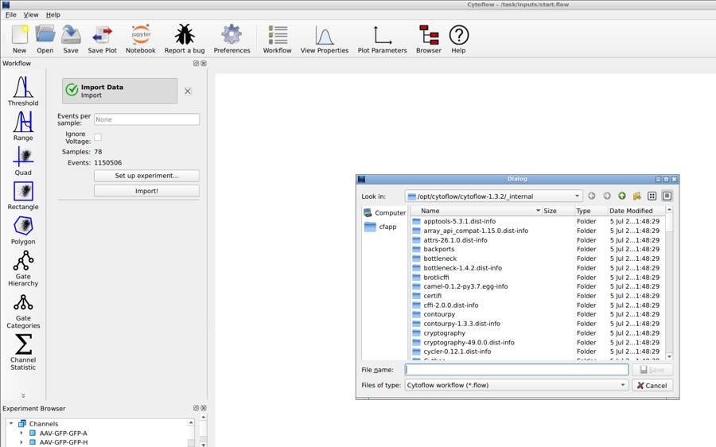
cu click 1040 744; cu paste "/task/outputs/workflow.flow"; sleep 0.5; cu key Return; sleep 3; ls -la /task/outputs; cu screenshot /tmp/screen.png
{
"file_path": "/tmp/screen.png"
}total 44 drwxrwsrwx 2 agent task 4096 Nov 10 19:15 . drwxr-xr-x 4 root root 4096 Nov 5 22:00 .. -rw-rw-r-- 1 cfapp task 34866 Nov 10 19:15 workflow.flow /tmp/screen.png

cu click 652 75; sleep 2; cu screenshot /tmp/screen.png
{
"file_path": "/tmp/screen.png"
}/tmp/screen.png
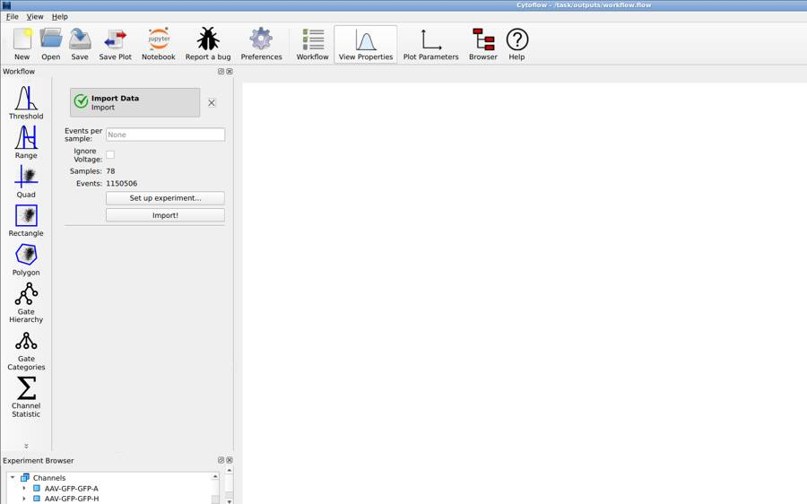
cat /usr/local/bin/cu; export DISPLAY=:1; which xdotool wmctrl xwininfo xrandr; xdotool search --name Cytoflow 2>/dev/null | while read w; do xdotool getwindowgeometry $w; done
#!/bin/bash
# Computer-use helper: the agent's only way to act on the screen.
# cu screenshot [path] -> PNG of the screen (default /tmp/screen.png); prints path
# cu click X Y [left|right|double]
# cu move X Y | cu drag X1 Y1 X2 Y2 | cu scroll X Y up|down [N]
# cu type "text" (keystrokes) | cu paste "text" (clipboard) | cu key KEYS (e.g. ctrl+s, Return)
# cu cursor -> current mouse position
export DISPLAY=${DISPLAY:-:1}
cmd=$1; shift
case "$cmd" in
screenshot) out=${1:-/tmp/screen.png}; scrot -o "$out" && echo "$out" ;;
click) xdotool mousemove "$1" "$2"; case "${3:-left}" in
left) xdotool click 1;; right) xdotool click 3;; double) xdotool click --repeat 2 1;; esac ;;
move) xdotool mousemove "$1" "$2" ;;
drag) xdotool mousemove "$1" "$2" mousedown 1 mousemove --sync "$3" "$4" mouseup 1 ;;
scroll) xdotool mousemove "$1" "$2"; b=$([ "$3" = up ] && echo 4 || echo 5); xdotool click --repeat "${4:-3}" $b ;;
type) xdotool type --delay 50 -- "$1" ;;
# paste: put text on the clipboard (detached owner process so it survives this command) then ctrl+v
# paste: own the clipboard (no -loops: Qt asks for TARGETS first, then the text), press ctrl+v,
# give Qt a moment to fetch it, then release. Robust both locally and on Modal.
paste) printf '%s' "$1" | xclip -quiet -selection clipboard -i >/dev/null 2>&1 & cp=$!
sleep 0.3; xdotool key ctrl+v; sleep 1; kill $cp 2>/dev/null; true ;;
key) xdotool key -- "$1" ;;
cursor) xdotool getmouselocation ;;
*) sed -n '2,9p' "$0"; exit 1 ;;
esac
/usr/bin/xdotool
/usr/bin/xwininfo
Window 14680068
Position: 0,0 (screen: 0)
Geometry: 3x3
Window 14680072
Position: 0,0 (screen: 0)
Geometry: 1x1
Window 14680070
Position: 2,40 (screen: 0)
Geometry: 2082x1171cu click 700 9 double; sleep 2; DISPLAY=:1 xdotool getwindowgeometry 14680070; cu screenshot /tmp/screen.png
Window 14680070 Position: 0,38 (screen: 0) Geometry: 1440x881 /tmp/screen.png
{
"file_path": "/tmp/screen.png"
}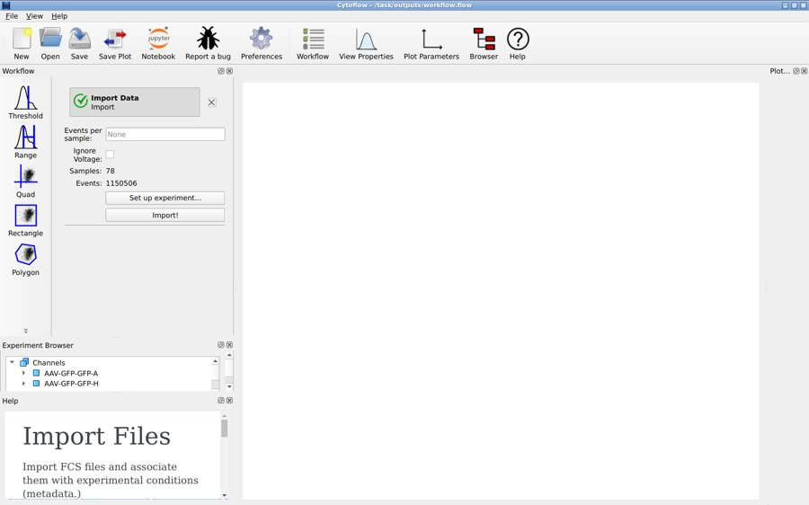
cu click 408 713; sleep 1; cu click 408 614; sleep 1; cu click 652 75; sleep 2; cu screenshot /tmp/screen.png
{
"file_path": "/tmp/screen.png"
}/tmp/screen.png
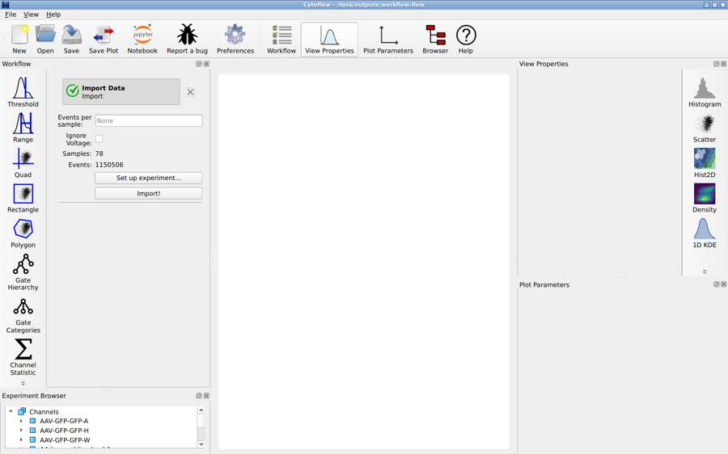
cu click 408 784; sleep 1; cu click 1393 390; sleep 3; cu screenshot /tmp/screen.png
{
"file_path": "/tmp/screen.png"
}/tmp/screen.png
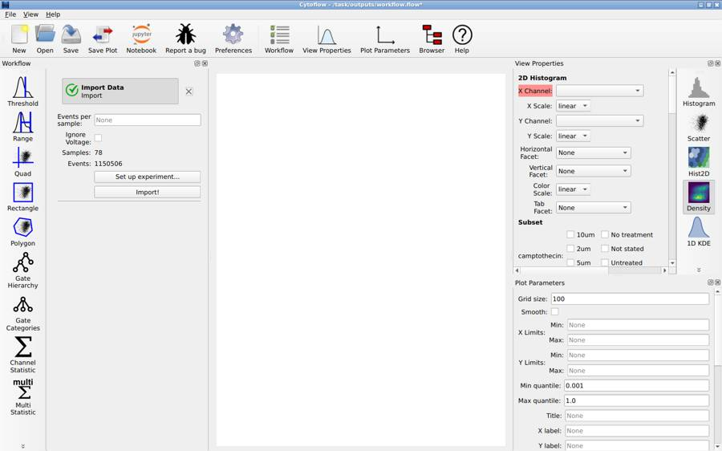
cu click 1195 181; sleep 1; cu screenshot /tmp/screen.png
{
"file_path": "/tmp/screen.png"
}/tmp/screen.png
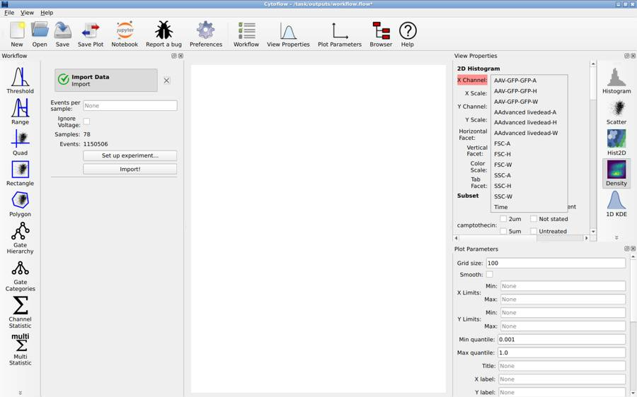
cu click 1135 325; sleep 1; cu click 1195 241; sleep 1; cu screenshot /tmp/screen.png
{
"file_path": "/tmp/screen.png"
}/tmp/screen.png
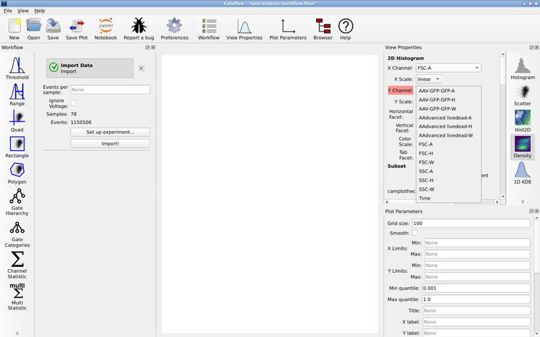
cu click 1135 457; sleep 12; cu screenshot /tmp/screen.png
{
"file_path": "/tmp/screen.png"
}/tmp/screen.png
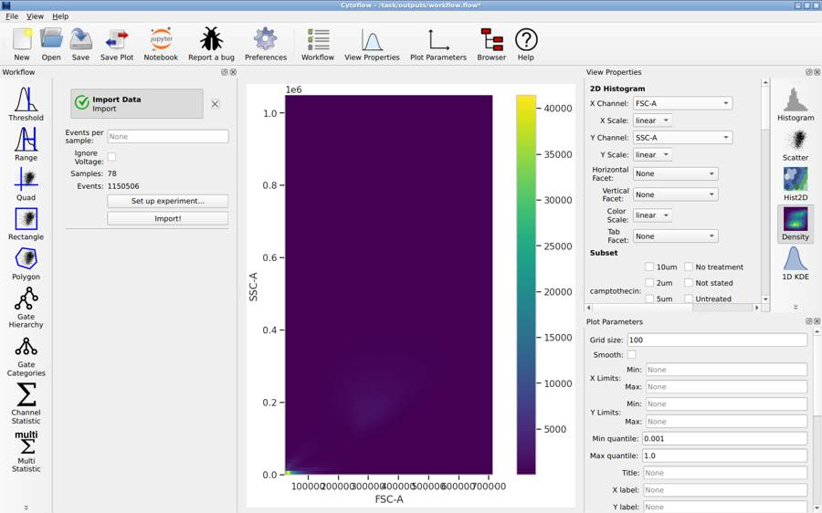
cu click 1143 377; sleep 1; cu screenshot /tmp/screen.png
{
"file_path": "/tmp/screen.png"
}/tmp/screen.png
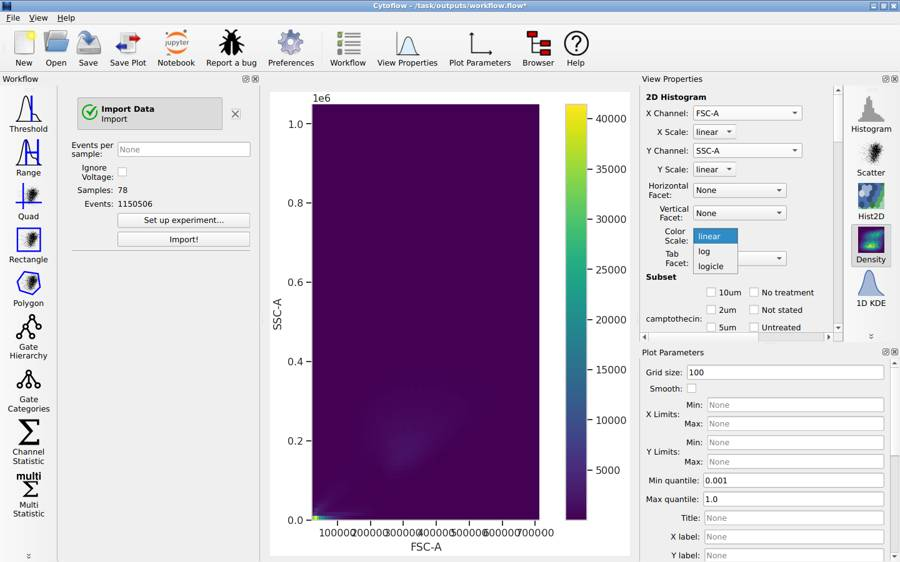
cu click 1127 402; sleep 12; cu screenshot /tmp/screen.png
{
"file_path": "/tmp/screen.png"
}/tmp/screen.png
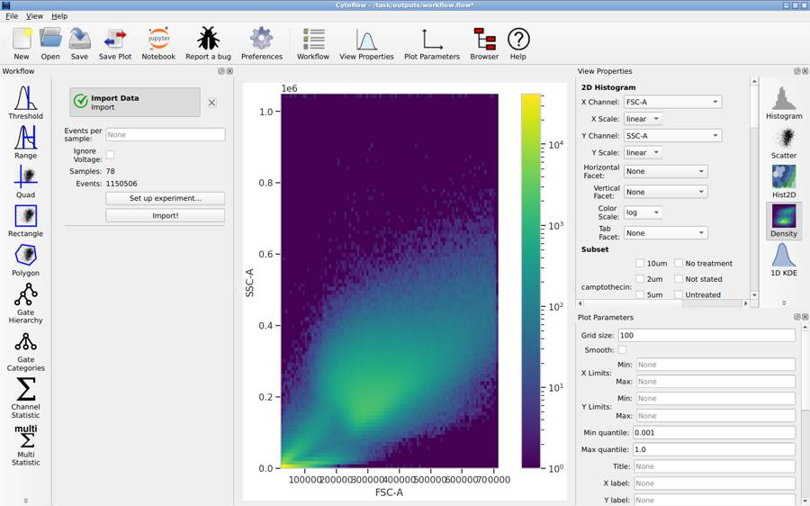
cu click 45 460; sleep 3; cu screenshot /tmp/screen.png
{
"file_path": "/tmp/screen.png"
}/tmp/screen.png
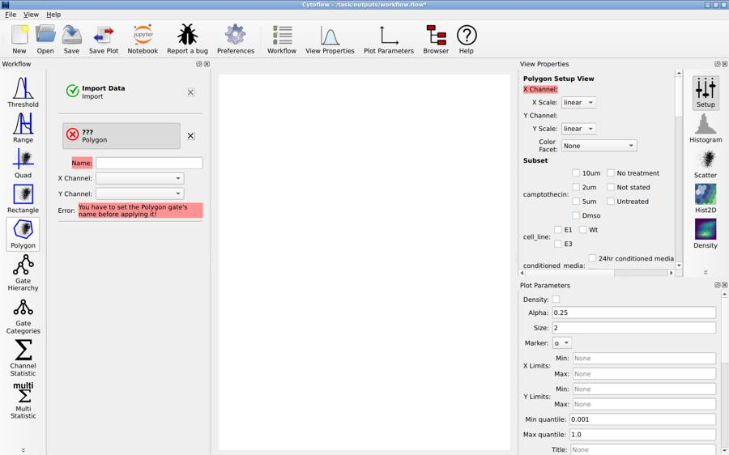
cu click 295 322; cu type "cells"; cu key Tab; sleep 1; cu click 276 353; sleep 1; cu screenshot /tmp/screen.png
{
"file_path": "/tmp/screen.png"
}/tmp/screen.png
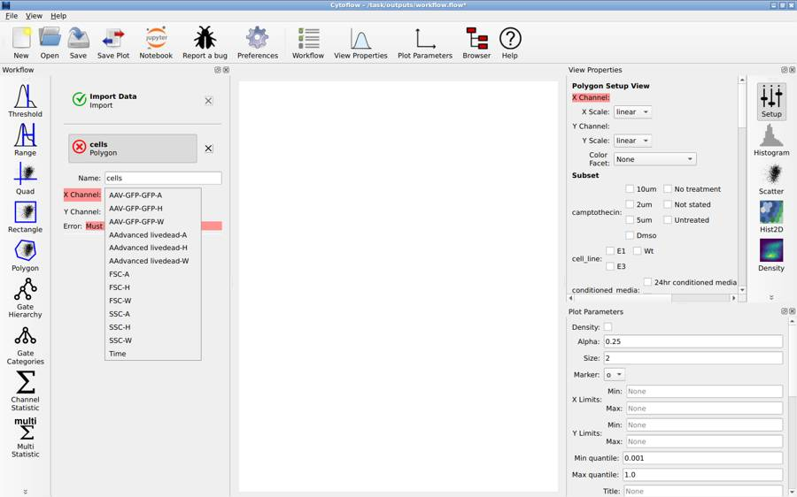
cu click 215 496; sleep 1; cu click 1098 592; sleep 1; cu click 276 383; sleep 1; cu screenshot /tmp/screen.png
{
"file_path": "/tmp/screen.png"
}/tmp/screen.png
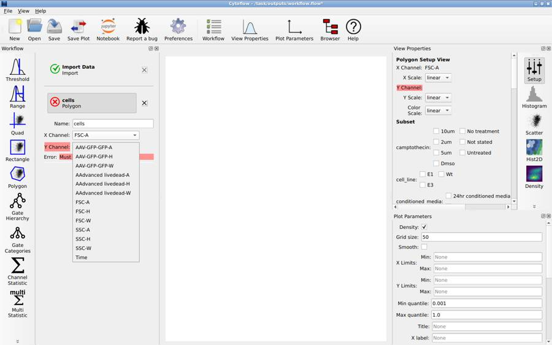
cu click 215 599; sleep 6; cu click 1143 288; sleep 1; cu screenshot /tmp/screen.png
{
"file_path": "/tmp/screen.png"
}/tmp/screen.png
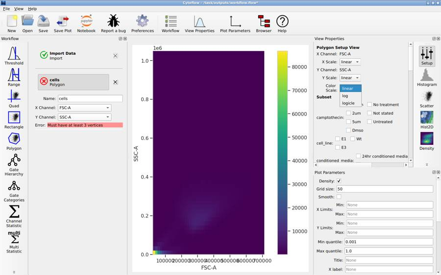
cu click 1127 313; sleep 5; cu click 1255 618 double; cu key ctrl+a; cu type "100"; cu key Tab; sleep 8; cu screenshot /tmp/screen.png
{
"file_path": "/tmp/screen.png"
}/tmp/screen.png
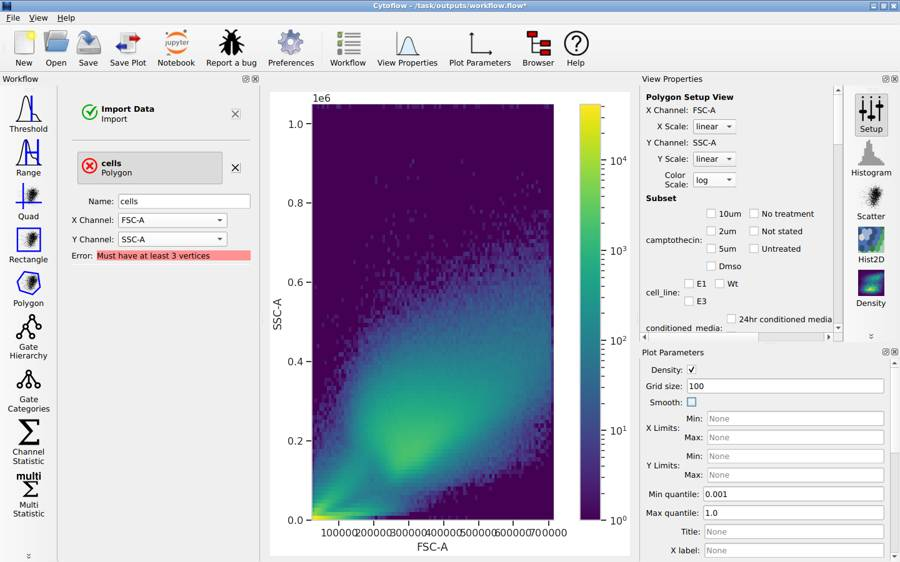
cu click 542 820; sleep 0.7; cu click 542 643; sleep 0.7; cu click 654 326; sleep 0.7; cu click 880 172; sleep 0.7; cu click 880 770; sleep 0.7; cu click 710 820 double; sleep 10; cu screenshot /tmp/screen.png
{
"file_path": "/tmp/screen.png"
}/tmp/screen.png
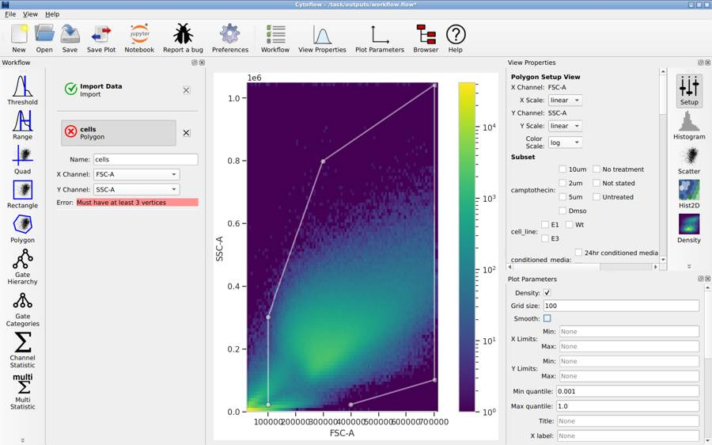
cu click 542 819; sleep 12; cu screenshot /tmp/screen.png
{
"file_path": "/tmp/screen.png"
}/tmp/screen.png
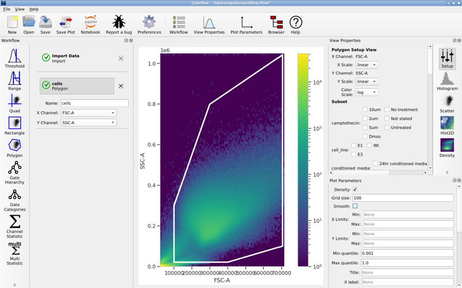
cu click 45 460; sleep 3; cu screenshot /tmp/screen.png
{
"file_path": "/tmp/screen.png"
}/tmp/screen.png
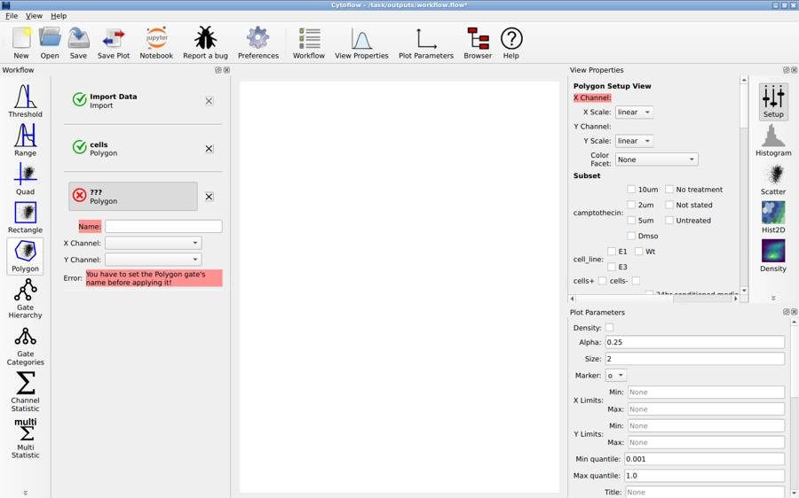
cu click 295 409; cu type "singlets"; cu key Tab; sleep 1; cu click 1085 507; sleep 1; cu click 1098 592; sleep 1; cu click 276 439; sleep 1; cu click 215 582; sleep 1; cu click 276 469; sleep 1; cu screenshot /tmp/screen.png
{
"file_path": "/tmp/screen.png"
}/tmp/screen.png
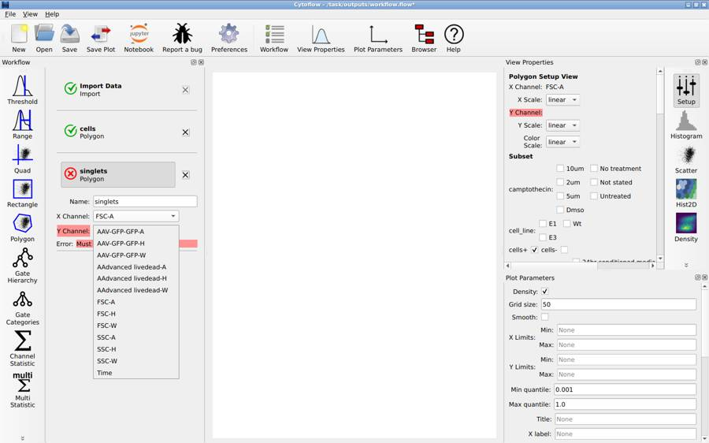
cu click 215 637; sleep 5; cu click 1143 288; sleep 1; cu click 1127 313; sleep 4; cu click 1255 618 double; cu key ctrl+a; cu type "100"; cu key Tab; sleep 8; cu screenshot /tmp/screen.png
{
"file_path": "/tmp/screen.png"
}/tmp/screen.png
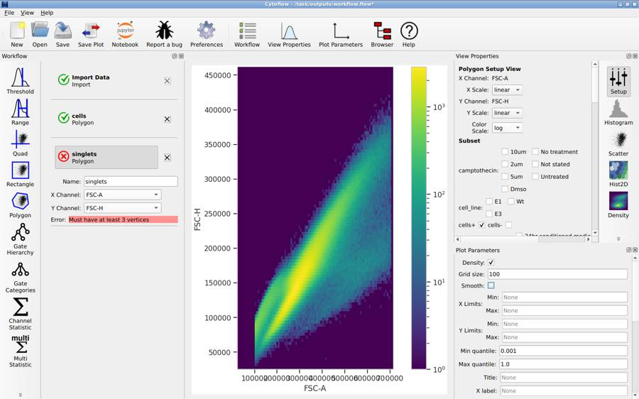
cu click 571 817; sleep 0.7; cu click 571 740; sleep 0.7; cu click 884 162; sleep 0.7; cu click 884 420; sleep 0.7; cu click 571 817; sleep 12; cu screenshot /tmp/screen.png
{
"file_path": "/tmp/screen.png"
}/tmp/screen.png
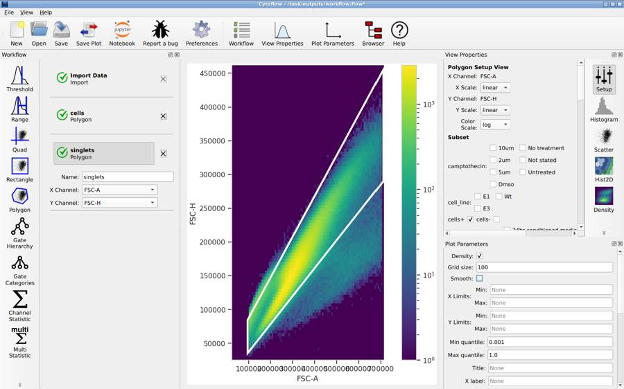
cu key ctrl+s; sleep 2; ls -la /task/outputs; cu click 768 75; sleep 1; cu click 1393 460; sleep 3; cu screenshot /tmp/screen.png
{
"file_path": "/tmp/screen.png"
}total 84 drwxrwsrwx 2 agent task 4096 Nov 10 19:15 . drwxr-xr-x 4 root root 4096 Nov 5 22:00 .. -rw-rw-r-- 1 cfapp task 75763 Nov 10 19:20 workflow.flow /tmp/screen.png
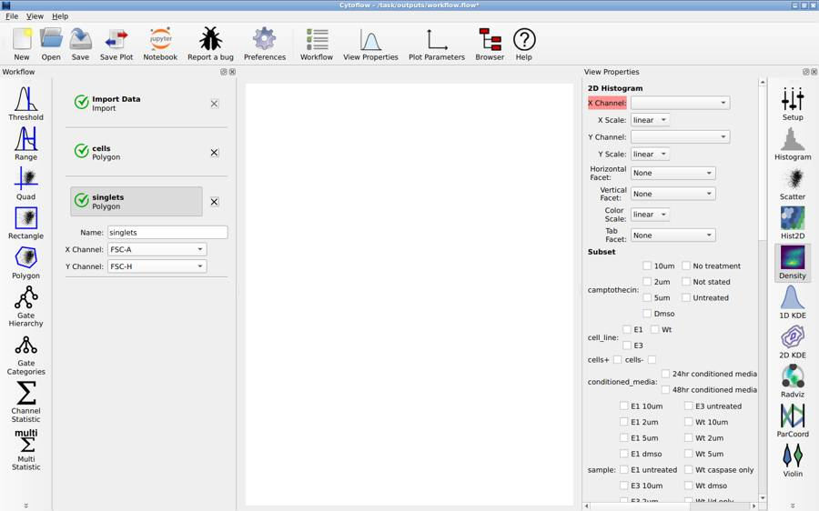
cu click 1143 211; sleep 1; cu click 1137 260; sleep 1; cu click 1143 271; sleep 1; cu click 1137 320; sleep 1; cu click 1143 377; sleep 1; cu click 1127 402; sleep 1; cu click 1195 181; sleep 1; cu click 1165 182; sleep 1; cu click 1195 241; sleep 1; cu click 1187 314; sleep 1; cu click 1085 633; sleep 10; cu screenshot /tmp/screen.png
{
"file_path": "/tmp/screen.png"
}/tmp/screen.png
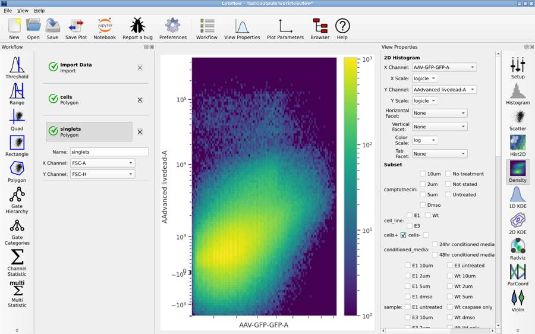
cu scroll 1180 700 down 10; sleep 1; cu screenshot /tmp/screen.png
{
"file_path": "/tmp/screen.png"
}/tmp/screen.png
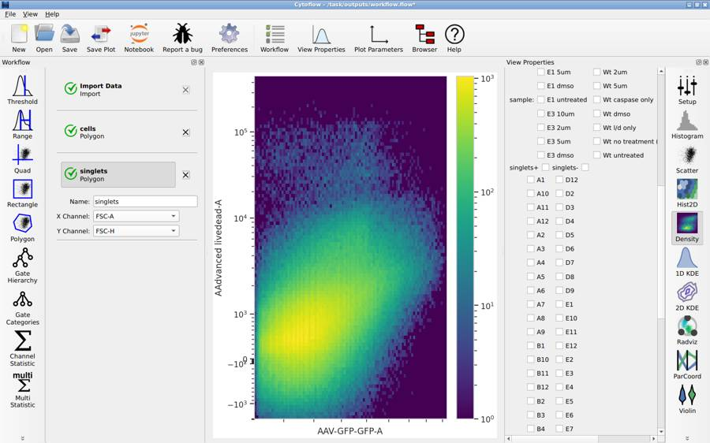
cu click 1106 340; sleep 0.5; cu click 1210 202; sleep 0.5; cu click 1210 259; sleep 0.5; cu click 1210 287; sleep 0.5; cu click 1210 315; sleep 1; cu scroll 1180 500 up 15; sleep 1; cu click 1183 304; sleep 1; cu screenshot /tmp/screen.png
{
"file_path": "/tmp/screen.png"
}/tmp/screen.png
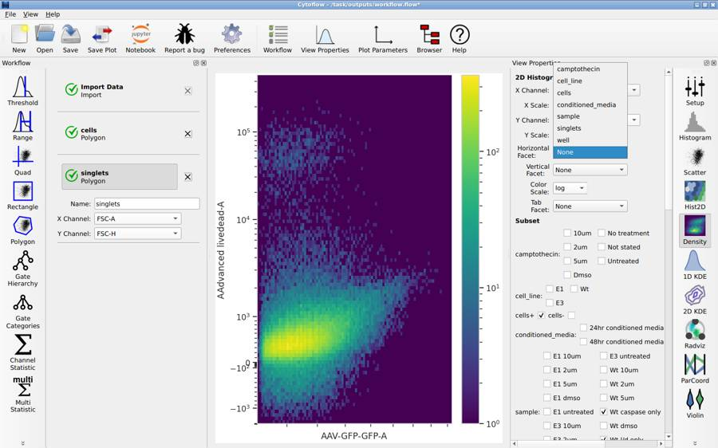
cu click 1140 233; sleep 12; cu screenshot /tmp/screen.png
{
"file_path": "/tmp/screen.png"
}/tmp/screen.png
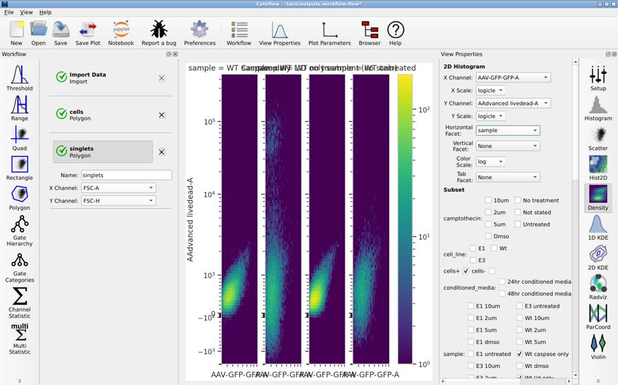
cu click 557 75; sleep 8; cu screenshot /tmp/screen.png
{
"file_path": "/tmp/screen.png"
}/tmp/screen.png
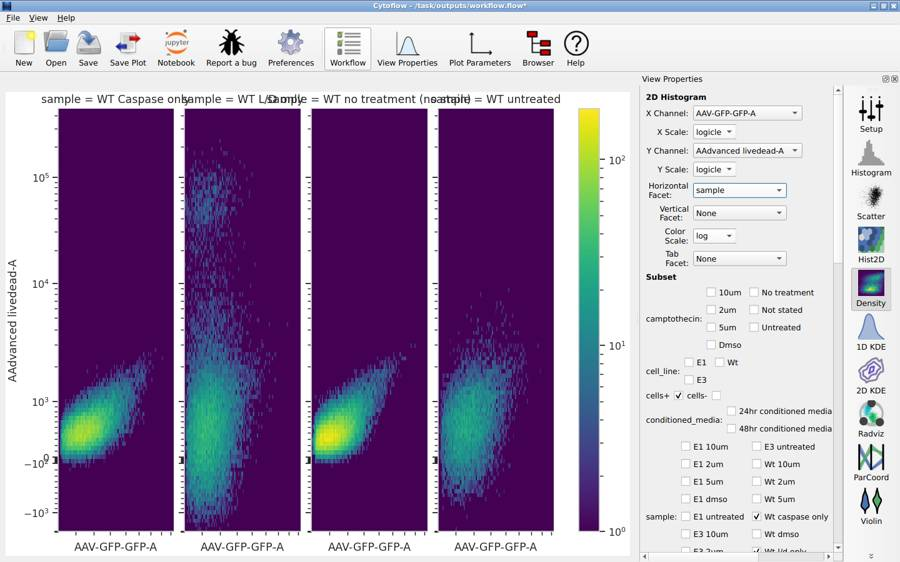
cu click 1393 180; sleep 3; cu screenshot /tmp/screen.png
{
"file_path": "/tmp/screen.png"
}/tmp/screen.png
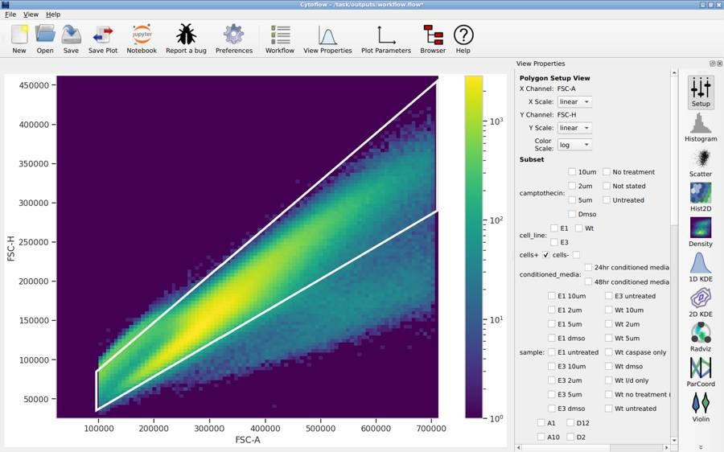
cu click 1393 250; sleep 3; cu screenshot /tmp/screen.png
{
"file_path": "/tmp/screen.png"
}/tmp/screen.png
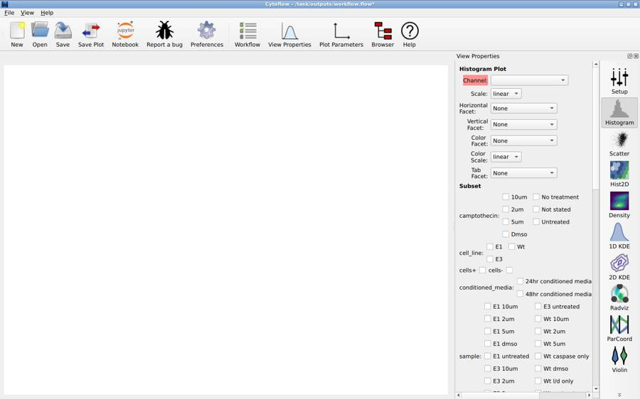
cu click 1137 211; sleep 1; cu click 1137 260; sleep 1; cu click 1190 181; sleep 1; cu click 1160 182; sleep 3; cu click 1085 609; sleep 2; cu click 1178 280; sleep 1; cu screenshot /tmp/screen.png
{
"file_path": "/tmp/screen.png"
}/tmp/screen.png
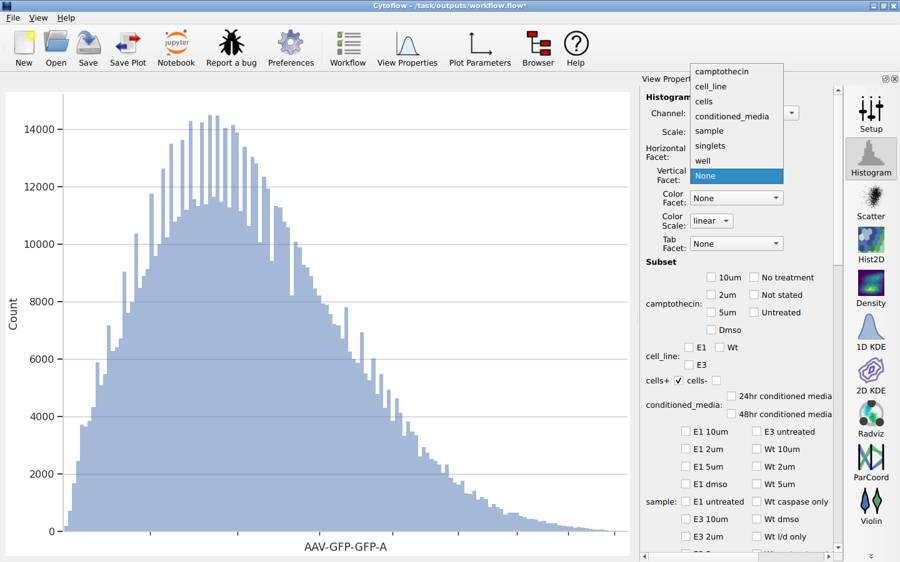
cu click 1135 209; sleep 3; cu click 1210 803; sleep 0.5; cu click 1210 859; sleep 0.5; cu scroll 1180 700 down 10; sleep 1; cu screenshot /tmp/screen.png
{
"file_path": "/tmp/screen.png"
}/tmp/screen.png
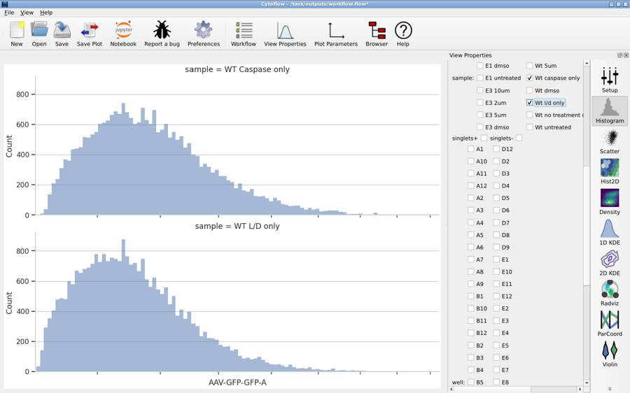
cu click 1210 263; sleep 0.5; cu click 1210 291; sleep 0.5; cu click 1106 316; sleep 8; cu screenshot /tmp/screen.png
{
"file_path": "/tmp/screen.png"
}/tmp/screen.png
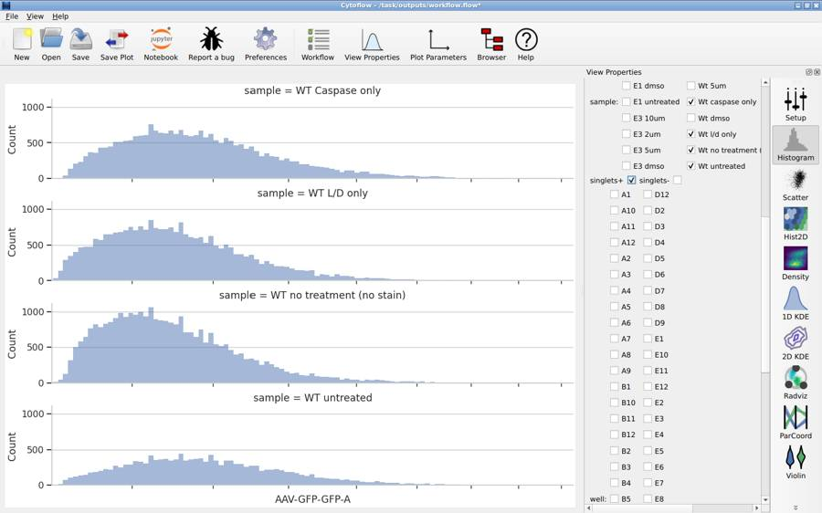
cu click 1210 178; sleep 0.5; cu click 1210 235; sleep 0.5; cu click 1210 263; sleep 0.5; cu click 1210 291; sleep 0.5; cu scroll 1180 500 up 15; sleep 1; cu click 1137 211; sleep 1; cu click 1127 236; sleep 1; cu click 1178 280; sleep 1; cu click 1155 114; sleep 15; cu screenshot /tmp/screen.png
{
"file_path": "/tmp/screen.png"
}/tmp/screen.png
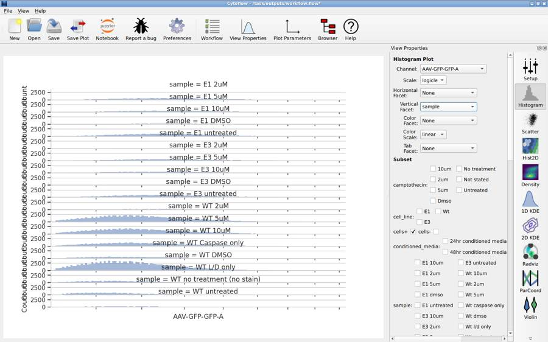
cu click 1137 211; sleep 1; cu screenshot /tmp/screen.png
{
"file_path": "/tmp/screen.png"
}/tmp/screen.png
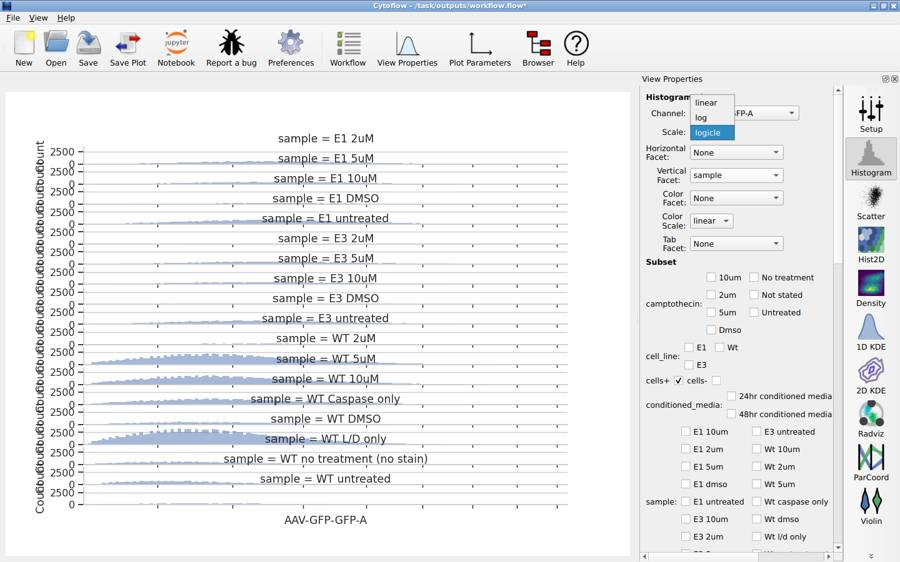
cu click 1122 188; sleep 2; cu click 1178 280; sleep 1; cu screenshot /tmp/screen.png
{
"file_path": "/tmp/screen.png"
}/tmp/screen.png
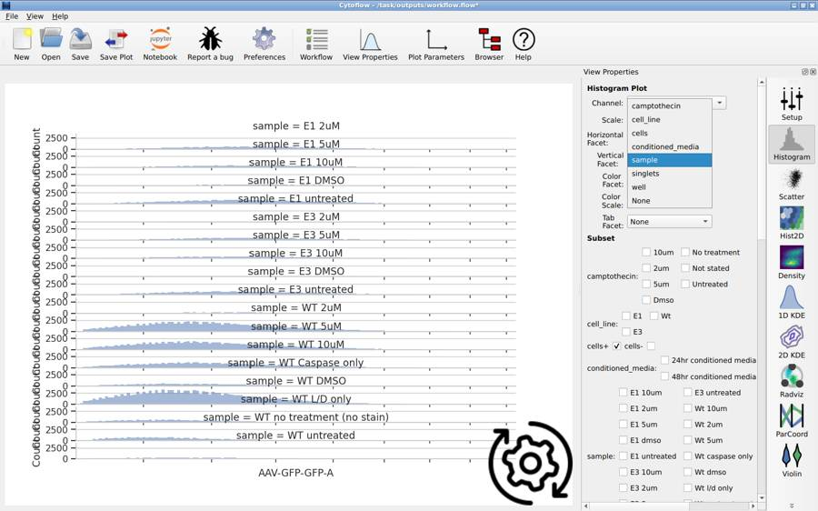
cu click 1155 186; sleep 15; cu screenshot /tmp/screen.png
{
"file_path": "/tmp/screen.png"
}/tmp/screen.png
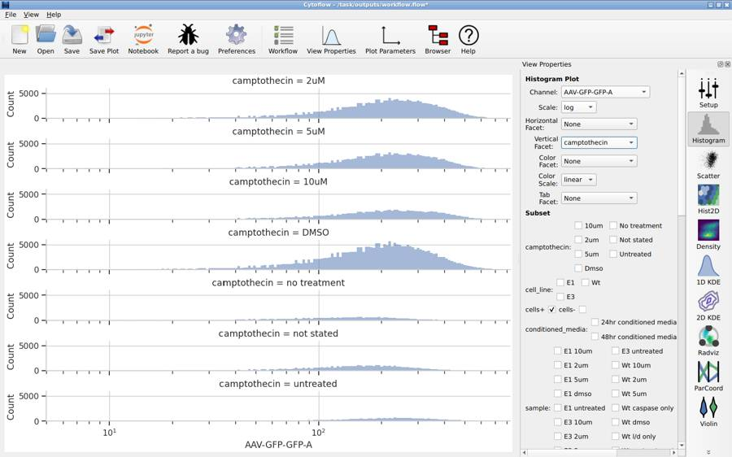
cu click 1178 280; sleep 1; cu screenshot /tmp/screen.png
{
"file_path": "/tmp/screen.png"
}/tmp/screen.png
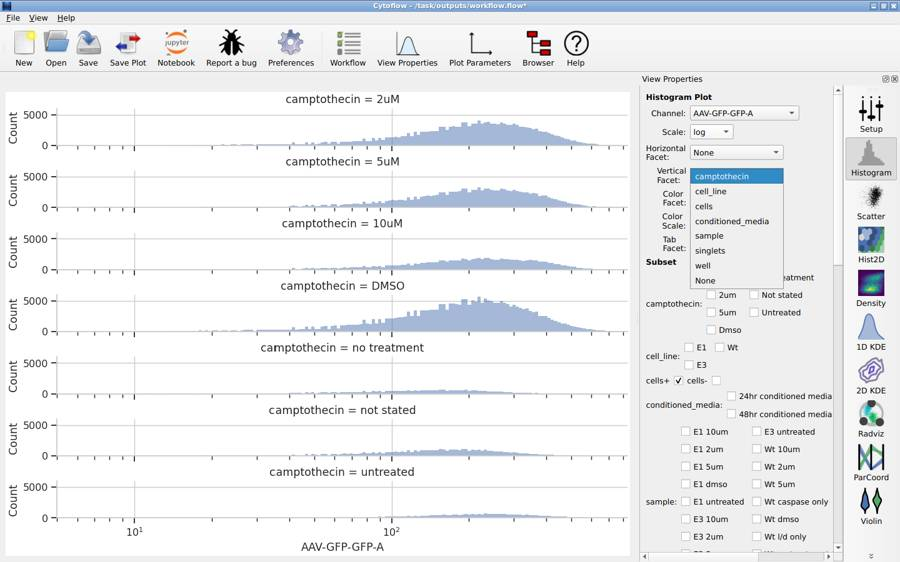
cu click 1135 377; sleep 2; cu click 1097 803; sleep 0.5; cu click 1210 803; sleep 0.5; cu click 1210 859; sleep 0.5; cu click 1210 691; sleep 0.5; cu scroll 1180 700 down 10; sleep 1; cu click 1210 263; sleep 0.5; cu click 1210 291; sleep 0.5; cu click 1106 316; sleep 10; cu screenshot /tmp/screen.png
{
"file_path": "/tmp/screen.png"
}/tmp/screen.png
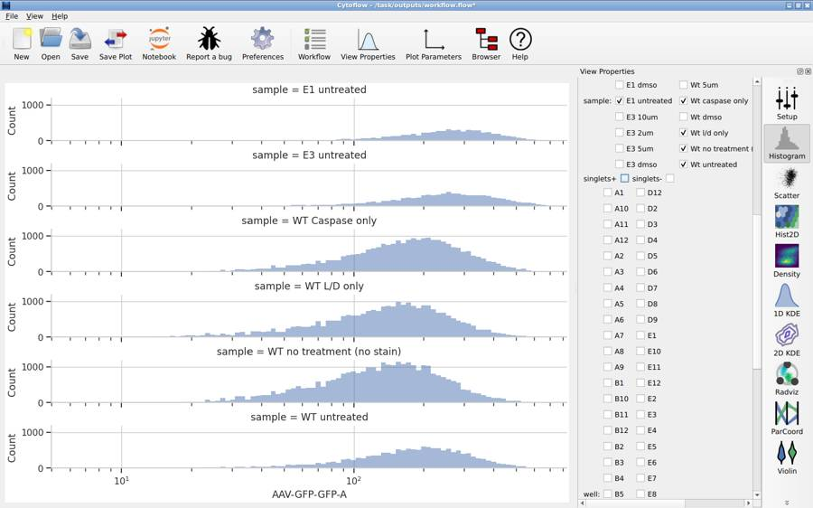
cu click 557 75; sleep 3; cu click 45 700; sleep 3; cu screenshot /tmp/screen.png
{
"file_path": "/tmp/screen.png"
}/tmp/screen.png
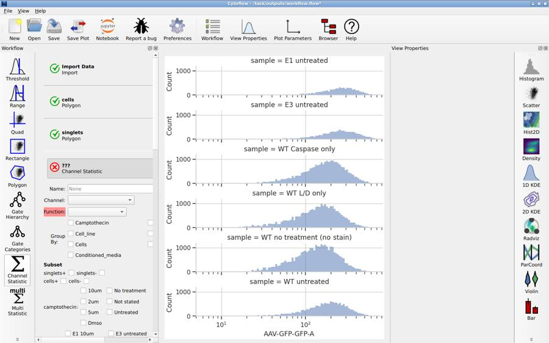
cu drag 421 510 700 510; sleep 3; cu screenshot /tmp/screen.png
{
"file_path": "/tmp/screen.png"
}/tmp/screen.png
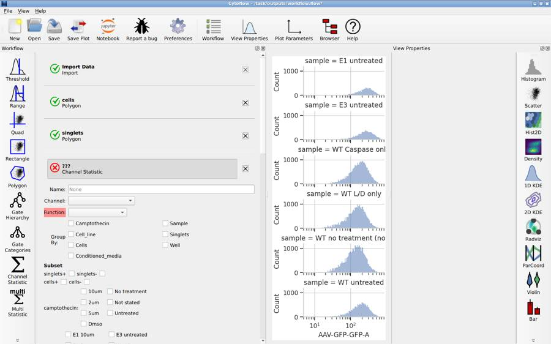
cu click 255 555; sleep 1; cu screenshot /tmp/screen.png
{
"file_path": "/tmp/screen.png"
}/tmp/screen.png
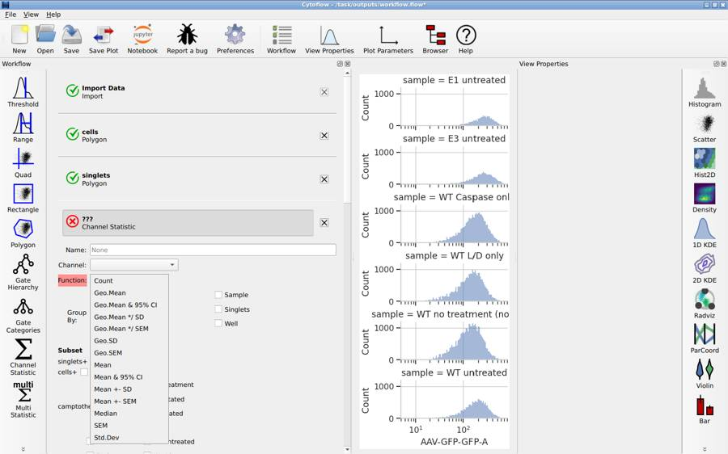
cu click 205 556; sleep 1; cu click 420 495; cu type "evcount"; cu key Tab; sleep 1; cu click 265 525; sleep 1; cu screenshot /tmp/screen.png
{
"file_path": "/tmp/screen.png"
}/tmp/screen.png
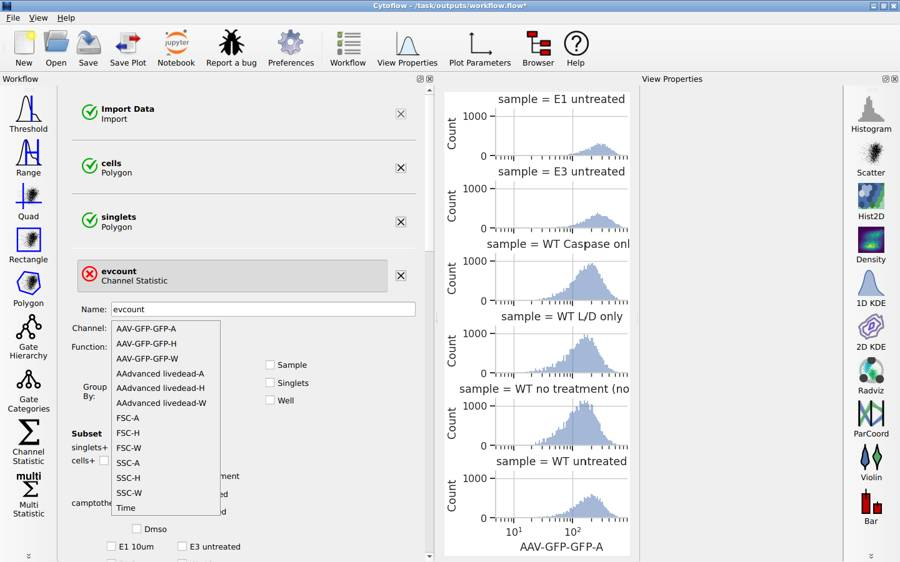
cu click 205 669; sleep 1; cu click 185 641; sleep 0.5; cu click 432 613; sleep 0.5; cu click 432 641; sleep 5; cu screenshot /tmp/screen.png
{
"file_path": "/tmp/screen.png"
}/tmp/screen.png
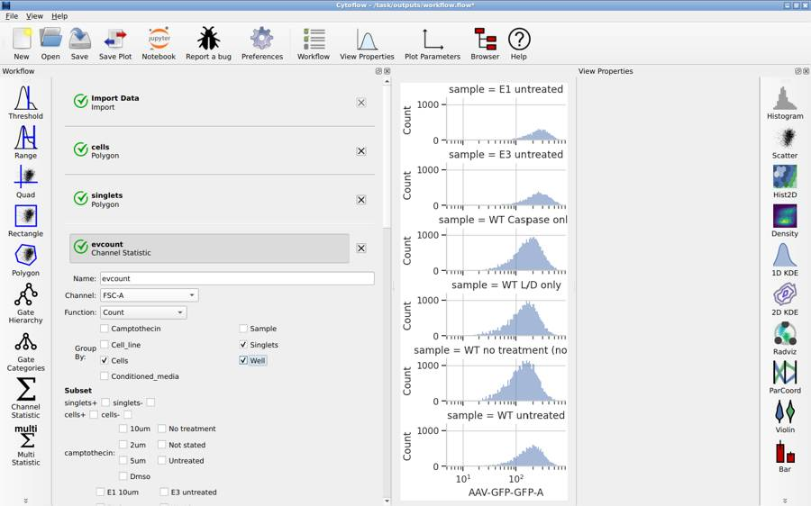
cu click 1393 889; sleep 1; cu screenshot /tmp/screen.png
{
"file_path": "/tmp/screen.png"
}/tmp/screen.png
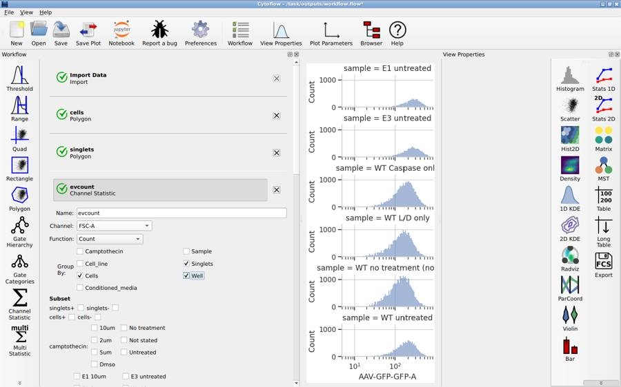
cu click 1399 540; sleep 3; cu screenshot /tmp/screen.png
{
"file_path": "/tmp/screen.png"
}/tmp/screen.png
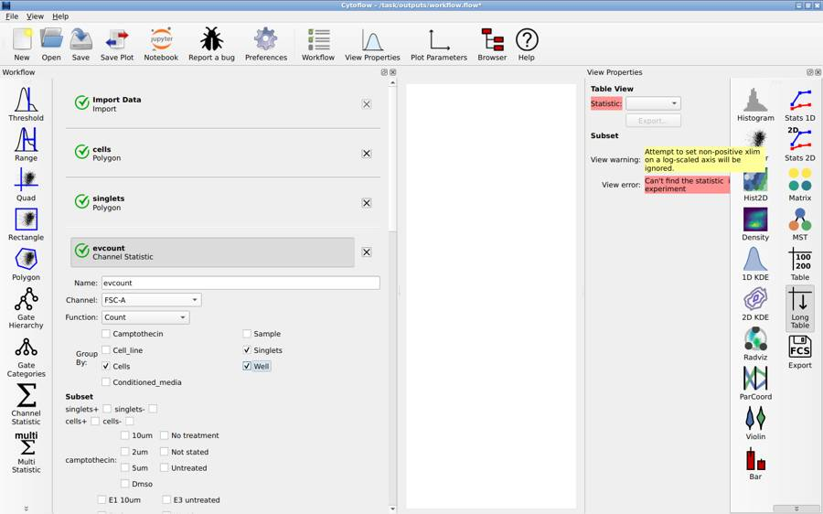
cu click 1142 181; sleep 1; cu screenshot /tmp/screen.png
{
"file_path": "/tmp/screen.png"
}/tmp/screen.png
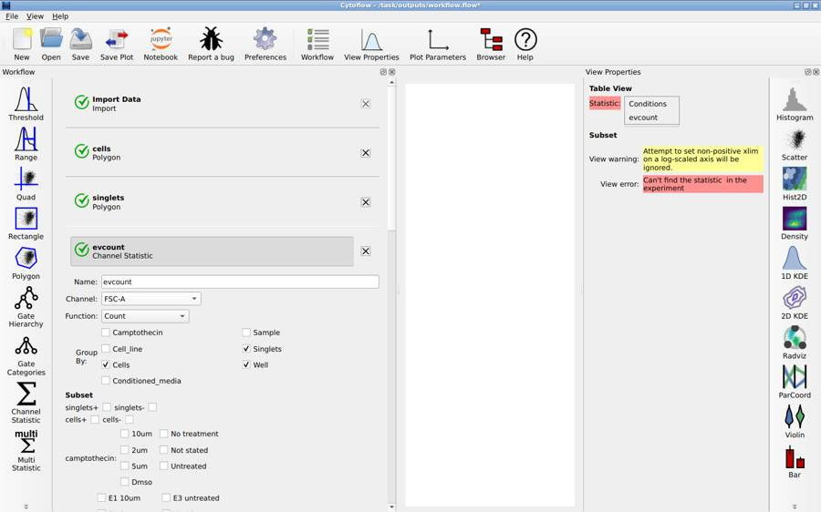
cu click 1128 206; sleep 4; cu screenshot /tmp/screen.png
{
"file_path": "/tmp/screen.png"
}/tmp/screen.png
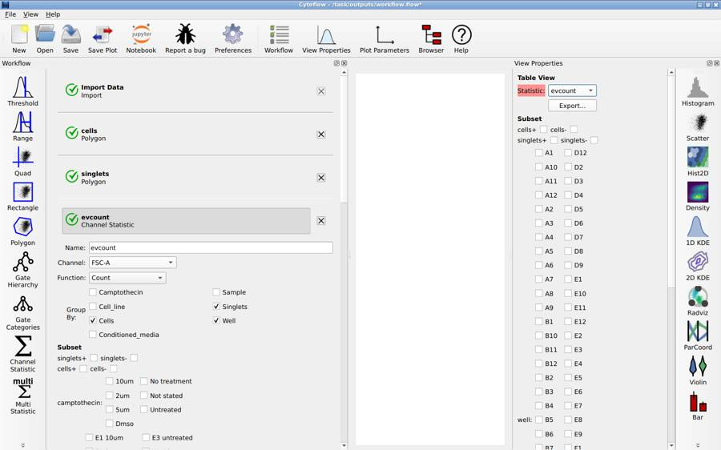
mkdir -p /task/outputs/exports; chmod 777 /task/outputs/exports; cu click 1142 211; sleep 2; cu screenshot /tmp/screen.png
{
"file_path": "/tmp/screen.png"
}/tmp/screen.png
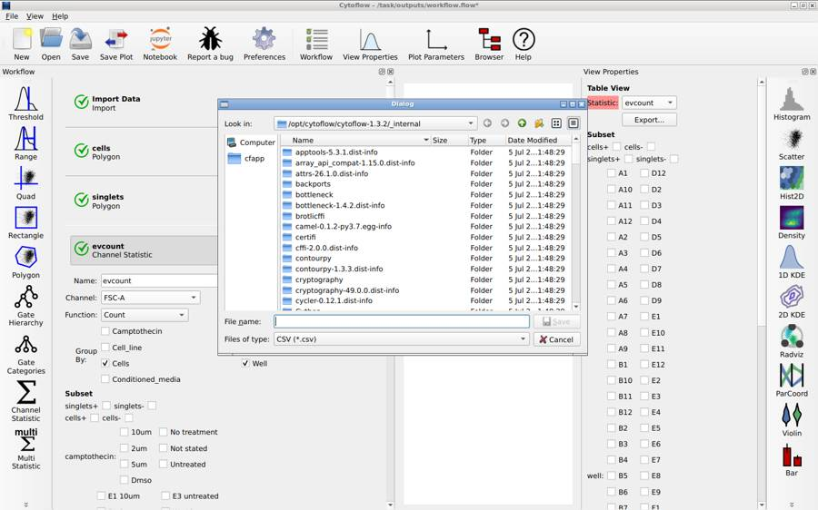
cu click 706 567; cu paste "/task/outputs/exports/evcount_v1.csv"; sleep 0.5; cu key Return; sleep 3; ls -la /task/outputs/exports; head -20 /task/outputs/exports/evcount_v1.csv; wc -l /task/outputs/exports/evcount_v1.csv
total 16 drwxrwsrwx 2 root task 4096 Nov 10 19:27 . drwxrwsrwx 3 agent task 4096 Nov 10 19:26 .. -rw-rw-r-- 1 cfapp task 4332 Nov 10 19:27 evcount_v1.csv cells,singlets,well,FSC-A 0,0,A1,8579.0 0,0,A10,6502.0 0,0,A11,11989.0 0,0,A12,1971.0 0,0,A2,9475.0 0,0,A3,14420.0 0,0,A4,1835.0 0,0,A5,3966.0 0,0,A6,7211.0 0,0,A7,8930.0 0,0,A8,1832.0 0,0,A9,5324.0 0,0,B1,5051.0 0,0,B10,3786.0 0,0,B11,4830.0 0,0,B12,1334.0 0,0,B2,5558.0 0,0,B3,7665.0 0,0,B4,1697.0 313 /task/outputs/exports/evcount_v1.csv
cd /task/outputs/exports; python3 - <<'E'
import pandas as pd
d=pd.read_csv('evcount_v1.csv')
d.columns=['cells','singlets','well','n']
t=d.groupby('well').n.sum()
c=d[d.cells==1].groupby('well').n.sum()
s=d[(d.cells==1)&(d.singlets==1)].groupby('well').n.sum()
L=pd.read_csv('/task/inputs/plate_layout.csv').set_index('well')
o=pd.DataFrame({'total':t,'cells':c,'singlets':s}).join(L[['sample','conditioned_media']])
o['pc']=100*o.cells/o.total; o['ps']=100*o.singlets/o.cells
import re
o['k']=[ (w[0],int(w[1:])) for w in o.index]
o=o.sort_values('k').drop(columns='k')
pd.set_option('display.width',200); pd.set_option('display.max_rows',200)
print(o.round(1)); print(o.total.sum())
Etotal cells singlets ... conditioned_media pc ps well ... A1 30920.0 21855.0 19565.0 ... 24hr conditioned media 70.7 89.5 A2 31266.0 21408.0 19750.0 ... 24hr conditioned media 68.5 92.3 A3 38748.0 23740.0 21493.0 ... 24hr conditioned media 61.3 90.5 A4 34861.0 32965.0 31360.0 ... 24hr conditioned media 94.6 95.1 A5 14011.0 9873.0 9004.0 ... 48hr conditioned media 70.5 91.2 A6 25118.0 17588.0 16270.0 ... 48hr conditioned media 70.0 92.5 A7 27544.0 18286.0 16726.0 ... 48hr conditioned media 66.4 91.5 A8 30067.0 28164.0 26867.0 ... 48hr conditioned media 93.7 95.4 A9 17224.0 11663.0 10643.0 ... No conditioned media 67.7 91.3 A10 24604.0 17857.0 16402.0 ... No conditioned media 72.6 91.9 A11 38346.0 25979.0 23852.0 ... No conditioned media 67.7 91.8 A12 31708.0 29669.0 27871.0 ... No conditioned media 93.6 93.9 B1 9849.0 4564.0 3867.0 ... 24hr conditioned media 46.3 84.7 B2 10963.0 5163.0 4740.0 ... 24hr conditioned media 47.1 91.8 B3 14921.0 6834.0 6217.0 ... 24hr conditioned media 45.8 91.0 B4 12172.0 10388.0 9867.0 ... 24hr conditioned media 85.3 95.0 B5 5068.0 2475.0 2207.0 ... 48hr conditioned media 48.8 89.2 B6 9638.0 5619.0 5178.0 ... 48hr conditioned media 58.3 92.2 B7 13360.0 6745.0 6256.0 ... 48hr conditioned media 50.5 92.8 B8 11210.0 9031.0 8636.0 ... 48hr conditioned media 80.6 95.6 B9 3505.0 1620.0 1459.0 ... No conditioned media 46.2 90.1 B10 8268.0 4293.0 3998.0 ... No conditioned media 51.9 93.1 B11 10609.0 5491.0 5127.0 ... No conditioned media 51.8 93.4 B12 9382.0 7978.0 7639.0 ... No conditioned media 85.0 95.8 C1 7495.0 4207.0 3701.0 ... 24hr conditioned media 56.1 88.0 C2 10263.0 6063.0 5777.0 ... 24hr conditioned media 59.1 95.3 C3 8563.0 5253.0 5046.0 ... 24hr conditioned media 61.3 96.1 C4 9241.0 6355.0 6118.0 ... 24hr conditioned media 68.8 96.3 C5 3151.0 1555.0 1402.0 ... 48hr conditioned media 49.3 90.2 C6 6099.0 3349.0 3150.0 ... 48hr conditioned media 54.9 94.1 C7 8001.0 4693.0 4436.0 ... 48hr conditioned media 58.7 94.5 C8 8215.0 6109.0 5914.0 ... 48hr conditioned media 74.4 96.8 C9 4067.0 2110.0 1885.0 ... No conditioned media 51.9 89.3 C10 8011.0 4661.0 4402.0 ... No conditioned media 58.2 94.4 C11 9008.0 5448.0 5165.0 ... No conditioned media 60.5 94.8 C12 13163.0 10653.0 10313.0 ... No conditioned media 80.9 96.8 D1 22778.0 15033.0 13540.0 ... 24hr conditioned media 66.0 90.1 D2 27593.0 18539.0 17167.0 ... 24hr conditioned media 67.2 92.6 D3 27824.0 16661.0 15493.0 ... 24hr conditioned media 59.9 93.0 D4 24551.0 23084.0 22028.0 ... 24hr conditioned media 94.0 95.4 D5 6454.0 4722.0 4364.0 ... 48hr conditioned media 73.2 92.4 D6 17066.0 11440.0 10636.0 ... 48hr conditioned media 67.0 93.0 D7 23253.0 14588.0 13619.0 ... 48hr conditioned media 62.7 93.4 D8 23299.0 21758.0 20466.0 ... 48hr conditioned media 93.4 94.1 D9 8616.0 6056.0 5597.0 ... No conditioned media 70.3 92.4 D10 19657.0 13846.0 12895.0 ... No conditioned media 70.4 93.1 D11 31867.0 21177.0 19867.0 ... No conditioned media 66.5 93.8 D12 25256.0 23362.0 22228.0 ... No conditioned media 92.5 95.1 E1 9821.0 3130.0 2782.0 ... 24hr conditioned media 31.9 88.9 E2 10681.0 5023.0 4762.0 ... 24hr conditioned media 47.0 94.8 E3 12311.0 5072.0 4792.0 ... 24hr conditioned media 41.2 94.5 E4 10059.0 8441.0 8172.0 ... 24hr conditioned media 83.9 96.8 E5 4437.0 1690.0 1522.0 ... 48hr conditioned media 38.1 90.1 E6 7547.0 3492.0 3260.0 ... 48hr conditioned media 46.3 93.4 E7 12028.0 5224.0 4904.0 ... 48hr conditioned media 43.4 93.9 E8 7979.0 6172.0 5878.0 ... 48hr conditioned media 77.4 95.2 E9 4147.0 1505.0 1332.0 ... No conditioned media 36.3 88.5 E10 5492.0 2576.0 2340.0 ... No conditioned media 46.9 90.8 E11 11711.0 4815.0 4585.0 ... No conditioned media 41.1 95.2 E12 10755.0 9228.0 8926.0 ... No conditioned media 85.8 96.7 F1 6393.0 2923.0 2586.0 ... 24hr conditioned media 45.7 88.5 F2 9910.0 5855.0 5632.0 ... 24hr conditioned media 59.1 96.2 F3 9940.0 5714.0 5492.0 ... 24hr conditioned media 57.5 96.1 F4 10729.0 8426.0 8182.0 ... 24hr conditioned media 78.5 97.1 F5 3184.0 1418.0 1290.0 ... 48hr conditioned media 44.5 91.0 F6 6320.0 3695.0 3563.0 ... 48hr conditioned media 58.5 96.4 F7 9381.0 5522.0 5314.0 ... 48hr conditioned media 58.9 96.2 F8 10605.0 8022.0 7790.0 ... 48hr conditioned media 75.6 97.1 F9 3608.0 1379.0 1248.0 ... No conditioned media 38.2 90.5 F10 8439.0 4680.0 4438.0 ... No conditioned media 55.5 94.8 F11 12193.0 6607.0 6285.0 ... No conditioned media 54.2 95.1 F12 11679.0 8942.0 8679.0 ... No conditioned media 76.6 97.1 G1 34073.0 32243.0 30283.0 ... not stated 94.6 93.9 G2 28006.0 26700.0 25726.0 ... not stated 95.3 96.4 G3 27095.0 25356.0 24315.0 ... not stated 93.6 95.9 G4 7482.0 6815.0 6613.0 ... not stated 91.1 97.0 G5 11594.0 9016.0 8693.0 ... not stated 77.8 96.4 G6 16054.0 15225.0 14614.0 ... not stated 94.8 96.0 [78 rows x 7 columns] 1150506.0
cu key ctrl+s; sleep 1; cu click 557 75; sleep 2; cu click 1393 390; sleep 3; cu screenshot /tmp/screen.png
{
"file_path": "/tmp/screen.png"
}/tmp/screen.png
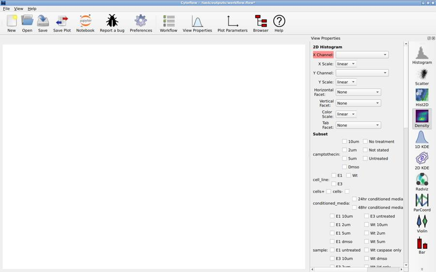
cu click 1143 271; sleep 1; cu click 1137 320; sleep 1; cu click 1143 377; sleep 1; cu click 1127 402; sleep 1; cu click 1195 181; sleep 1; cu click 1165 182; sleep 1; cu click 1195 241; sleep 1; cu click 1187 314; sleep 2; cu click 1085 633; sleep 1; cu click 1210 827; sleep 1; cu click 1183 304; sleep 1; cu click 1140 233; sleep 2; cu scroll 1180 700 down 10; sleep 1; cu screenshot /tmp/screen.png
{
"file_path": "/tmp/screen.png"
}/tmp/screen.png
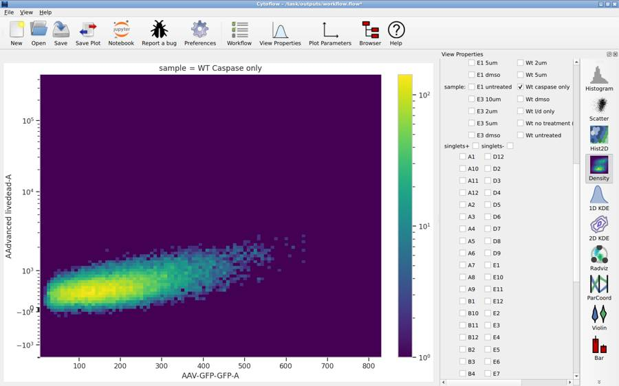
cu click 1210 259; sleep 0.5; cu click 1210 287; sleep 0.5; cu click 1210 315; sleep 0.5; cu click 1106 340; sleep 10; cu screenshot /tmp/screen.png
{
"file_path": "/tmp/screen.png"
}/tmp/screen.png
cu click 1210 202; sleep 0.5; cu click 1210 259; sleep 0.5; cu click 1210 287; sleep 0.5; cu click 1210 315; sleep 0.5; cu scroll 1180 500 up 15; sleep 1; cu click 1183 304; sleep 1; cu screenshot /tmp/screen.png
{
"file_path": "/tmp/screen.png"
}/tmp/screen.png
cu click 1160 210; sleep 2; cu click 1151 580; sleep 15; cu screenshot /tmp/screen.png
{
"file_path": "/tmp/screen.png"
}/tmp/screen.png
thinking
No caspase-bright population shows up at any camptothecin dose, even though the dead-stain signal rises with treatment. Next I'm adding live and caspase-positive gates, with thresholds taken from the single-stain controls.
cu click 557 75; sleep 3; cu click 300 355; sleep 2; cu click 45 250; sleep 3; cu screenshot /tmp/screen.png
{
"file_path": "/tmp/screen.png"
}/tmp/screen.png
cu click 420 495; cu type "live"; cu key Tab; sleep 1; cu click 265 525; sleep 1; cu click 255 598; sleep 2; cu click 1085 455; sleep 0.5; cu click 1106 786; sleep 0.5; cu click 1210 649; sleep 0.5; cu click 1210 705; sleep 0.5; cu click 1210 733; sleep 0.5; cu click 1210 761; sleep 0.5; cu click 1127 202; sleep 1; cu screenshot /tmp/screen.png
{
"file_path": "/tmp/screen.png"
}/tmp/screen.png
cu click 1124 252; sleep 2; cu drag 699 510 540 510; sleep 2; cu click 1170 236; sleep 1; cu screenshot /tmp/screen.png
{
"file_path": "/tmp/screen.png"
}/tmp/screen.png
cu click 1127 164; sleep 10; cu screenshot /tmp/screen.png
{
"file_path": "/tmp/screen.png"
}/tmp/screen.png
cu click 350 555; cu type "-100000"; cu key Tab; sleep 1; cu click 350 585; cu type "3000"; cu key Tab; sleep 10; cu screenshot /tmp/screen.png
{
"file_path": "/tmp/screen.png"
}/tmp/screen.png
cu click 45 180; sleep 3; cu screenshot /tmp/screen.png
{
"file_path": "/tmp/screen.png"
}/tmp/screen.png
cu click 350 581; cu type "caspase_pos"; cu key Tab; sleep 1; cu click 275 612; sleep 1; cu click 245 613; sleep 2; cu click 1085 477; sleep 0.5; cu click 1080 555; sleep 0.5; cu click 1106 830; sleep 0.5; cu click 1210 693; sleep 0.5; cu click 1210 749; sleep 0.5; cu click 1210 777; sleep 0.5; cu click 1210 805; sleep 0.5; cu click 1180 258; sleep 1; cu screenshot /tmp/screen.png
{
"file_path": "/tmp/screen.png"
}/tmp/screen.png
cu click 1138 186; sleep 3; cu click 275 612; sleep 1; cu screenshot /tmp/screen.png
{
"file_path": "/tmp/screen.png"
}/tmp/screen.png
cu click 243 589; sleep 8; cu screenshot /tmp/screen.png
{
"file_path": "/tmp/screen.png"
}/tmp/screen.png
cu click 350 642; cu type "450"; cu key Tab; sleep 8; cu screenshot /tmp/screen.png
{
"file_path": "/tmp/screen.png"
}/tmp/screen.png
cu key ctrl+s; sleep 1; cu click 300 705; sleep 3; cu screenshot /tmp/screen.png
{
"file_path": "/tmp/screen.png"
}/tmp/screen.png
sleep 5; cu click 1393 889; sleep 1; cu click 1399 540; sleep 3; cu click 185 785; sleep 1; cu click 394 757; sleep 6; cu screenshot /tmp/screen.png
{
"file_path": "/tmp/screen.png"
}/tmp/screen.png
mkdir -p /task/work; cat > /task/work/exp.sh <<'E'
#!/bin/bash
# usage: exp.sh name -> clicks Export in table view and saves to exports/name.csv
rm -f /task/outputs/exports/$1.csv
cu click 1142 211; sleep 2
cu click 706 567; cu paste "/task/outputs/exports/$1.csv"; sleep 0.5; cu key Return; sleep 3
ls -la /task/outputs/exports/$1.csv
E
chmod +x /task/work/exp.sh
cat > /task/work/tab.py <<'E'
import pandas as pd, sys
pd.set_option('display.width',250); pd.set_option('display.max_rows',300); pd.set_option('display.max_columns',30)
def load(f='/task/outputs/exports/evcount_v2.csv'):
d=pd.read_csv(f); d=d.rename(columns={d.columns[-1]:'n'})
L=pd.read_csv('/task/inputs/plate_layout.csv')
rows=[]
for w,g in d.groupby('well'):
tot=g.n.sum()
c=g[g.cells==1]; s=c[c.singlets==1]; l=s[s.live==1]; p=l[l.caspase_pos==1]
pa=s[s.caspase_pos==1]; dead=s[s.live==0]; pd_=dead[dead.caspase_pos==1]
rows.append(dict(well=w,total=tot,cells=c.n.sum(),singlets=s.n.sum(),live=l.n.sum(),casp=p.n.sum(),casp_all=pa.n.sum(),dead=dead.n.sum(),casp_dead=pd_.n.sum()))
o=pd.DataFrame(rows).merge(L,on='well')
o['pc']=100*o.cells/o.total; o['ps']=100*o.singlets/o.cells; o['pl']=100*o.live/o.singlets; o['pp']=100*o.casp/o.live
o['pp_all']=100*o.casp_all/o.singlets; o['pp_dead']=100*o.casp_dead/o.dead.clip(lower=1)
o['r']=o.well.str[0]; o['c']=o.well.str[1:].astype(int)
return o.sort_values(['r','c']).reset_index(drop=True)
if __name__=='__main__':
o=load(*sys.argv[1:])
print(o[['well','sample','conditioned_media','total','cells','singlets','live','casp','pc','ps','pl','pp','pp_all','pp_dead']].round(1).to_string())
E
/task/work/exp.sh evcount_v2 && python3 /task/work/tab.py-rw-rw-r-- 1 cfapp task 16590 Nov 10 19:32 /task/outputs/exports/evcount_v2.csv well sample conditioned_media total cells singlets live casp pc ps pl pp pp_all pp_dead 0 A1 WT 10uM 24hr conditioned media 30920.0 21855.0 19565.0 18157.0 422.0 70.7 89.5 92.8 2.3 3.0 12.1 1 A2 WT 5uM 24hr conditioned media 31266.0 21408.0 19750.0 18564.0 357.0 68.5 92.3 94.0 1.9 2.5 10.9 2 A3 WT 2uM 24hr conditioned media 38748.0 23740.0 21493.0 20331.0 390.0 61.3 90.5 94.6 1.9 2.5 12.9 3 A4 WT DMSO 24hr conditioned media 34861.0 32965.0 31360.0 30064.0 330.0 94.6 95.1 95.9 1.1 1.3 5.2 4 A5 WT 10uM 48hr conditioned media 14011.0 9873.0 9004.0 8071.0 188.0 70.5 91.2 89.6 2.3 3.5 14.0 5 A6 WT 5uM 48hr conditioned media 25118.0 17588.0 16270.0 15069.0 252.0 70.0 92.5 92.6 1.7 2.5 12.3 6 A7 WT 2uM 48hr conditioned media 27544.0 18286.0 16726.0 15639.0 270.0 66.4 91.5 93.5 1.7 2.4 11.4 7 A8 WT DMSO 48hr conditioned media 30067.0 28164.0 26867.0 25714.0 273.0 93.7 95.4 95.7 1.1 1.3 6.2 8 A9 WT 10uM No conditioned media 17224.0 11663.0 10643.0 9548.0 280.0 67.7 91.3 89.7 2.9 4.4 16.9 9 A10 WT 5uM No conditioned media 24604.0 17857.0 16402.0 15038.0 309.0 72.6 91.9 91.7 2.1 3.0 13.9 10 A11 WT 2uM No conditioned media 38346.0 25979.0 23852.0 22203.0 363.0 67.7 91.8 93.1 1.6 2.6 16.2 11 A12 WT DMSO No conditioned media 31708.0 29669.0 27871.0 26146.0 299.0 93.6 93.9 93.8 1.1 1.6 8.0 12 B1 E1 10uM 24hr conditioned media 9849.0 4564.0 3867.0 3863.0 506.0 46.3 84.7 99.9 13.1 13.2 75.0 13 B2 E1 5uM 24hr conditioned media 10963.0 5163.0 4740.0 4166.0 253.0 47.1 91.8 87.9 6.1 8.1 22.6 14 B3 E1 2uM 24hr conditioned media 14921.0 6834.0 6217.0 5689.0 344.0 45.8 91.0 91.5 6.0 8.2 31.2 15 B4 E1 DMSO 24hr conditioned media 12172.0 10388.0 9867.0 9194.0 496.0 85.3 95.0 93.2 5.4 6.3 19.0 16 B5 E1 10uM 48hr conditioned media 5068.0 2475.0 2207.0 1705.0 98.0 48.8 89.2 77.3 5.7 7.1 11.6 17 B6 E1 5uM 48hr conditioned media 9638.0 5619.0 5178.0 4487.0 185.0 58.3 92.2 86.7 4.1 5.7 16.1 18 B7 E1 2uM 48hr conditioned media 13360.0 6745.0 6256.0 5468.0 199.0 50.5 92.8 87.4 3.6 5.1 15.4 19 B8 E1 DMSO 48hr conditioned media 11210.0 9031.0 8636.0 7419.0 234.0 80.6 95.6 85.9 3.2 4.5 12.9 20 B9 E1 10uM No conditioned media 3505.0 1620.0 1459.0 1021.0 82.0 46.2 90.1 70.0 8.0 11.3 18.9 21 B10 E1 5uM No conditioned media 8268.0 4293.0 3998.0 3307.0 205.0 51.9 93.1 82.7 6.2 9.7 26.2 22 B11 E1 2uM No conditioned media 10609.0 5491.0 5127.0 4382.0 261.0 51.8 93.4 85.5 6.0 8.5 23.8 23 B12 E1 DMSO No conditioned media 9382.0 7978.0 7639.0 6836.0 425.0 85.0 95.8 89.5 6.2 7.9 21.9 24 C1 E3 10uM 24hr conditioned media 7495.0 4207.0 3701.0 2768.0 187.0 56.1 88.0 74.8 6.8 10.9 23.0 25 C2 E3 5uM 24hr conditioned media 10263.0 6063.0 5777.0 4714.0 316.0 59.1 95.3 81.6 6.7 9.0 19.4 26 C3 E3 2uM 24hr conditioned media 8563.0 5253.0 5046.0 4072.0 242.0 61.3 96.1 80.7 5.9 8.7 20.4 27 C4 E3 DMSO 24hr conditioned media 9241.0 6355.0 6118.0 4618.0 301.0 68.8 96.3 75.5 6.5 9.1 16.9 28 C5 E3 10uM 48hr conditioned media 3151.0 1555.0 1402.0 821.0 44.0 49.3 90.2 58.6 5.4 8.9 13.9 29 C6 E3 5uM 48hr conditioned media 6099.0 3349.0 3150.0 2377.0 156.0 54.9 94.1 75.5 6.6 8.6 14.9 30 C7 E3 2uM 48hr conditioned media 8001.0 4693.0 4436.0 3520.0 267.0 58.7 94.5 79.4 7.6 10.2 20.4 31 C8 E3 DMSO 48hr conditioned media 8215.0 6109.0 5914.0 4450.0 269.0 74.4 96.8 75.2 6.0 8.4 15.6 32 C9 E3 10uM No conditioned media 4067.0 2110.0 1885.0 1165.0 82.0 51.9 89.3 61.8 7.0 11.6 19.0 33 C10 E3 5uM No conditioned media 8011.0 4661.0 4402.0 3247.0 206.0 58.2 94.4 73.8 6.3 10.4 22.0 34 C11 E3 2uM No conditioned media 9008.0 5448.0 5165.0 4232.0 279.0 60.5 94.8 81.9 6.6 10.4 27.8 35 C12 E3 DMSO No conditioned media 13163.0 10653.0 10313.0 8474.0 466.0 80.9 96.8 82.2 5.5 8.7 23.7 36 D1 WT 10uM 24hr conditioned media 22778.0 15033.0 13540.0 12460.0 271.0 66.0 90.1 92.0 2.2 3.0 12.7 37 D2 WT 5uM 24hr conditioned media 27593.0 18539.0 17167.0 16273.0 269.0 67.2 92.6 94.8 1.7 2.2 13.0 38 D3 WT 2uM 24hr conditioned media 27824.0 16661.0 15493.0 14482.0 292.0 59.9 93.0 93.5 2.0 2.7 12.6 39 D4 WT DMSO 24hr conditioned media 24551.0 23084.0 … [5,613 more characters not shown]
cu click 45 700; sleep 3; cu screenshot /tmp/screen.png
{
"file_path": "/tmp/screen.png"
}/tmp/screen.png
cu scroll 300 500 down 15; sleep 1; cu screenshot /tmp/screen.png
{
"file_path": "/tmp/screen.png"
}/tmp/screen.png
cu click 350 442; cu type "time_meansd"; cu key Tab; sleep 1; cu click 265 472; sleep 1; cu click 205 760; sleep 1; cu click 394 616; sleep 5; cu screenshot /tmp/screen.png
{
"file_path": "/tmp/screen.png"
}/tmp/screen.png
cu click 45 700; sleep 3; cu scroll 110 500 down 15; sleep 1; cu screenshot /tmp/screen.png
{
"file_path": "/tmp/screen.png"
}/tmp/screen.png
cu scroll 110 500 up 5; sleep 1; cu screenshot /tmp/screen.png
{
"file_path": "/tmp/screen.png"
}/tmp/screen.png
cu scroll 110 500 up 4; sleep 1; cu screenshot /tmp/screen.png
{
"file_path": "/tmp/screen.png"
}/tmp/screen.png
cu click 350 153; cu type "time_median"; cu key Tab; sleep 1; cu click 265 184; sleep 1; cu click 205 472; sleep 1; cu click 255 214; sleep 1; cu screenshot /tmp/screen.png
{
"file_path": "/tmp/screen.png"
}/tmp/screen.png
cu click 208 478; sleep 1; cu click 394 327; sleep 4; cu click 45 700; sleep 3; cu screenshot /tmp/screen.png
{
"file_path": "/tmp/screen.png"
}/tmp/screen.png
cu click 350 240; cu type "bl1_median"; cu key Tab; sleep 1; cu click 265 270; sleep 1; cu click 235 271; sleep 1; cu click 255 300; sleep 1; cu click 208 564; sleep 1; cu click 394 414; sleep 1; cu click 187 489; sleep 1; cu click 166 645; sleep 3; cu screenshot /tmp/screen.png
{
"file_path": "/tmp/screen.png"
}/tmp/screen.png
cu click 394 329; sleep 3; cu click 45 700; sleep 3; cu screenshot /tmp/screen.png
{
"file_path": "/tmp/screen.png"
}/tmp/screen.png
cu click 350 326; cu type "bl2_median"; cu key Tab; sleep 1; cu click 265 356; sleep 1; cu click 255 429; sleep 1; cu click 255 387; sleep 1; cu click 208 651; sleep 1; cu click 394 500; sleep 1; cu click 187 575; sleep 1; cu click 166 731; sleep 3; cu key ctrl+s; sleep 2; cu screenshot /tmp/screen.png
{
"file_path": "/tmp/screen.png"
}/tmp/screen.png
cu click 1393 889; sleep 1; cu click 1399 540; sleep 3; cu click 1142 181; sleep 1; cu screenshot /tmp/screen.png
{
"file_path": "/tmp/screen.png"
}/tmp/screen.png
cu key Escape; sleep 0.5 cat > /task/work/selexp.sh <<'E' #!/bin/bash # usage: selexp.sh index name ; selects statistic by index in table view combo and exports cu click 1142 181; sleep 1; cu key Home; sleep 0.3 for i in $(seq 1 $1); do cu key Down; sleep 0.2; done cu key Return; sleep 4 /task/work/exp.sh $2 E chmod +x /task/work/selexp.sh /task/work/selexp.sh 1 bl1_median; /task/work/selexp.sh 2 bl2_median; /task/work/selexp.sh 4 time_meansd; /task/work/selexp.sh 5 time_median cd /task/outputs/exports; head -4 bl1_median.csv bl2_median.csv time_meansd.csv time_median.csv
-rw-rw-r-- 1 cfapp task 1776 Nov 10 19:36 /task/outputs/exports/bl1_median.csv -rw-rw-r-- 1 cfapp task 792 Nov 10 19:36 /task/outputs/exports/bl2_median.csv -rw-rw-r-- 1 cfapp task 4578 Nov 10 19:36 /task/outputs/exports/time_meansd.csv -rw-rw-r-- 1 cfapp task 808 Nov 10 19:36 /task/outputs/exports/time_median.csv ==> bl1_median.csv <== well,live,AAV-GFP-GFP-A A1,0,311.0 A1,1,174.0 A10,0,326.0 ==> bl2_median.csv <== well,AAdvanced livedead-A A1,553.0 A10,639.0 A11,593.0 ==> time_meansd.csv <== well,Mean,+SD,-SD A1,8295.8340232859,12837.83705814683,3753.8309884249675 A10,8276.651763940823,12841.47444823205,3711.8290796495958 A11,8002.7685808167735,12493.575665983866,3511.9614956496807 ==> time_median.csv <== well,Time A1,8596.0 A10,8413.5 A11,8120.5
cat > /task/work/qc.py <<'E'
import pandas as pd, sys
sys.path.insert(0,'/task/work')
from tab import load
E='/task/outputs/exports/'
o=load(E+(sys.argv[1] if len(sys.argv)>1 else 'evcount_v2.csv'))
t=pd.read_csv(E+'time_meansd.csv'); t['t_mean']=t.Mean; t['t_sd']=t['+SD']-t.Mean
tm=pd.read_csv(E+'time_median.csv').rename(columns={'Time':'t_med'})
b1=pd.read_csv(E+'bl1_median.csv'); b1=b1.pivot(index='well',columns='live',values=b1.columns[-1]).rename(columns={0:'bl1_dead',1:'bl1_live'}).reset_index()
b2=pd.read_csv(E+'bl2_median.csv'); b2.columns=['well','bl2_med']
o=o.merge(t[['well','t_mean','t_sd']]).merge(tm).merge(b1).merge(b2)
o['span_est']=o.t_sd*12**0.5
o['skew']=(o.t_mean-o.t_med)/o.t_sd
print(o[['well','sample','total','pc','pl','pp','t_mean','t_med','t_sd','span_est','skew','bl1_live','bl1_dead','bl2_med']].round(2).to_string())
E
python3 /task/work/qc.pywell sample total pc pl pp t_mean t_med t_sd span_est skew bl1_live bl1_dead bl2_med 0 A1 WT 10uM 30920.0 70.68 92.80 2.32 8295.83 8596.0 4542.00 15733.96 -0.07 174.0 311.0 553.0 1 A2 WT 5uM 31266.0 68.47 93.99 1.92 7834.38 8008.0 4393.59 15219.84 -0.04 172.0 305.0 490.0 2 A3 WT 2uM 38748.0 61.27 94.59 1.92 8372.80 8619.5 4629.39 16036.67 -0.05 171.0 305.5 494.0 3 A4 WT DMSO 34861.0 94.56 95.87 1.10 8440.55 8819.0 4476.91 15508.48 -0.08 157.0 257.5 384.0 4 A5 WT 10uM 14011.0 70.47 89.64 2.33 8091.55 8264.0 4482.63 15528.29 -0.04 183.0 335.0 626.0 5 A6 WT 5uM 25118.0 70.02 92.62 1.67 8380.51 8642.0 4569.12 15827.89 -0.06 170.0 320.0 555.0 6 A7 WT 2uM 27544.0 66.39 93.50 1.73 8146.43 8089.5 4619.16 16001.24 0.01 171.0 318.0 550.0 7 A8 WT DMSO 30067.0 93.67 95.71 1.06 7919.30 8197.0 4314.19 14944.80 -0.06 157.0 276.0 441.0 8 A9 WT 10uM 17224.0 67.71 89.71 2.93 7891.72 7966.0 4487.12 15543.83 -0.02 200.0 344.0 691.0 9 A10 WT 5uM 24604.0 72.58 91.68 2.05 8276.65 8413.5 4564.82 15813.01 -0.03 180.0 326.0 639.0 10 A11 WT 2uM 38346.0 67.75 93.09 1.63 8002.77 8120.5 4490.81 15556.61 -0.03 175.0 332.0 593.0 11 A12 WT DMSO 31708.0 93.57 93.81 1.14 7877.00 7948.5 4439.74 15379.71 -0.02 158.0 257.0 546.0 12 B1 E1 10uM 9849.0 46.34 99.90 13.10 8392.68 8434.0 4703.41 16293.10 -0.01 275.0 521.5 720.0 13 B2 E1 5uM 10963.0 47.09 87.89 6.07 8100.53 8184.0 4589.02 15896.85 -0.02 247.0 365.0 1024.5 14 B3 E1 2uM 14921.0 45.80 91.51 6.05 8105.47 8138.0 4578.45 15860.20 -0.01 248.0 382.0 1046.0 15 B4 E1 DMSO 12172.0 85.34 93.18 5.39 8034.44 8158.0 4415.93 15297.25 -0.03 237.0 341.0 961.0 16 B5 E1 10uM 5068.0 48.84 77.25 5.75 8015.15 8104.0 4492.25 15561.62 -0.02 247.0 331.0 1251.0 17 B6 E1 5uM 9638.0 58.30 86.66 4.12 8115.12 8206.5 4531.22 15696.61 -0.02 229.0 345.0 1030.0 18 B7 E1 2uM 13360.0 50.49 87.40 3.64 8053.85 8154.0 4516.80 15646.65 -0.02 234.0 333.0 1046.5 19 B8 E1 DMSO 11210.0 80.56 85.91 3.15 7972.18 8043.0 4342.13 15041.60 -0.02 224.0 313.0 1092.0 20 B9 E1 10uM 3505.0 46.22 69.98 8.03 8066.32 8111.0 4506.06 15609.44 -0.01 268.0 356.5 1824.0 21 B10 E1 5uM 8268.0 51.92 82.72 6.20 7910.31 8010.5 4445.49 15399.64 -0.02 251.0 355.0 1243.0 22 B11 E1 2uM 10609.0 51.76 85.47 5.96 8391.29 8537.0 4633.19 16049.84 -0.03 245.0 357.0 1176.0 23 B12 E1 DMSO 9382.0 85.04 89.49 6.22 7804.03 7964.0 4241.40 14692.63 -0.04 243.0 347.0 1086.0 24 C1 E3 10uM 7495.0 56.13 74.79 6.76 7811.33 7835.0 4379.23 15170.10 -0.01 229.0 359.0 1550.0 25 C2 E3 5uM 10263.0 59.08 81.60 6.70 7912.34 8019.0 4382.11 15180.06 -0.02 224.0 337.0 1217.0 26 C3 E3 2uM 8563.0 61.35 80.70 5.94 7562.05 7529.0 4293.64 14873.62 0.01 224.0 325.5 1334.5 27 C4 E3 DMSO 9241.0 68.77 75.48 6.52 8607.30 8778.0 4532.05 15699.49 -0.04 222.0 310.0 1472.0 28 C5 E3 10uM 3151.0 49.35 58.56 5.36 8057.45 8195.0 4399.83 15241.45 -0.03 224.0 321.0 2365.0 29 C6 E3 5uM 6099.0 54.91 75.46 6.56 7797.57 7838.0 4379.70 15171.72 -0.01 232.0 323.0 1557.0 30 C7 E3 2uM 8001.0 58.66 79.35 7.59 7874.28 7998.0 4355.60 15088.24 -0.03 236.0 341.5 1455.0 31 C8 E3 DMSO 8215.0 74.36 75.25 6.04 7803.99 7889.0 4206.87 14573.01 -0.02 221.0 303.0 1477.0 32 C9 E3 10uM 4067.0 51.88 61.80 7.04 8379.07 8494.0 4641.80 16079.68 -0.02 227.0 346.0 2172.0 33 C10 E3 5uM 8011.0 58.18 73.76 6.34 7750.97 7794.0 4203.46 14561.20 -0.01 233.0 347.0 1649.0 34 C11 E3 2uM 9008.0 60.48 81.94 6.59 7942.54 8098.5 4328.53 14994.47 -0.04 239.5 366.0 1411.0 35 C12 E3 DMSO 13163.0 80.93 82.17 5.50 7816.15 7968.0 4300.36 14896.89 -0.04 222.0 337.0 1266.0 36 D1 WT 10uM 22778.0 66.00 92.02 2.17 7907.82 7979.0 4243.00 14698.18 -0.02 187.0 316.0 683.5 37 D2 WT 5uM 27593.0 67.19 94.79 1.65 8437.90 8614.0 4456.57 15438.02 -0.04 183.0 321.0 523.0 38 D3 WT 2uM 27824.0 59.88 93.47 2.02 8411.93 8541.0 4611.99 15976.42 -0.03 189.5 315.0 608.0 39 D4 WT DMSO 24551.0 94.02 94.13 1.55 8295.33 8367.0 4321.76 14971.01 -0.02 175.0 292.5 537.0 40 D5 WT 10uM 6454.0 73.16 89.76 2.25 7854.58 7928.0 4197.42 14540.29 -0.02 192.0 333.0 682.0 41 D6 WT 5uM 17066.0 67.03 92.58 1.73 7790.01 7879.0 4233.09 14663.84 -0.02 188.0 327.0 676.5 42 D7 WT 2uM 23253.0 62.74 92.15 1.68 7781.42 7896.0 4283.29 14837.75 -0.03 … [4,822 more characters not shown]
cu click 557 75; sleep 2; cu click 1393 180; sleep 3; cu screenshot /tmp/screen.png
{
"file_path": "/tmp/screen.png"
}/tmp/screen.png
cat > /task/work/combo.sh <<'E' #!/bin/bash # usage: combo.sh X Y index cu click $1 $2; sleep 0.8; cu key Home; sleep 0.2 for i in $(seq 1 $3); do cu key Down; sleep 0.15; done cu key Return; sleep 1 E chmod +x /task/work/combo.sh; cd /task/work cu click 1151 578; sleep 1 ./combo.sh 1178 244 6; ./combo.sh 1178 280 4; ./combo.sh 1178 317 8; ./combo.sh 1190 181 12; sleep 20; cu screenshot /tmp/screen.png
{
"file_path": "/tmp/screen.png"
}/tmp/screen.png
cu click 557 75; sleep 3; cu scroll 110 500 up 40; sleep 1; cu screenshot /tmp/screen.png
{
"file_path": "/tmp/screen.png"
}/tmp/screen.png
cu click 300 527; sleep 4; cu click 45 180; sleep 3; cu screenshot /tmp/screen.png
{
"file_path": "/tmp/screen.png"
}/tmp/screen.png
cd /task/work; cu click 350 668; cu type "t_gt4000"; cu key Tab; sleep 1; ./combo.sh 275 698 12; cu click 350 728; cu type "4000"; cu key Tab; sleep 6; cu click 45 180; sleep 3; cu screenshot /tmp/screen.png
{
"file_path": "/tmp/screen.png"
}/tmp/screen.png
cd /task/work; cu click 350 754; cu type "t_gt8000"; cu key Tab; sleep 1; ./combo.sh 275 784 12; cu click 350 815; cu type "8000"; cu key Tab; sleep 6; cu click 45 180; sleep 3; cu scroll 110 500 down 2; sleep 1; cu screenshot /tmp/screen.png
{
"file_path": "/tmp/screen.png"
}/tmp/screen.png
cd /task/work; cu click 350 716; cu type "t_gt12000"; cu key Tab; sleep 1; ./combo.sh 275 746 12; cu click 350 776; cu type "12000"; cu key Tab; sleep 8; cu click 300 861; sleep 4; cu screenshot /tmp/screen.png
{
"file_path": "/tmp/screen.png"
}/tmp/screen.png
cu scroll 110 500 down 4; sleep 1; cu screenshot /tmp/screen.png
{
"file_path": "/tmp/screen.png"
}/tmp/screen.png
cd /task/work; cu click 394 698; sleep 1; cu click 394 726; sleep 1; cu click 394 754; sleep 6; cu key ctrl+s; sleep 2; ./exp.sh evcount_v3; head -3 /task/outputs/exports/evcount_v3.csv; python3 - <<'E'
import pandas as pd
d=pd.read_csv('/task/outputs/exports/evcount_v3.csv'); d=d.rename(columns={d.columns[-1]:'n'})
d['bin']=d.t_gt4000+d.t_gt8000+d.t_gt12000
p=d.pivot_table(index='well',columns='bin',values='n',aggfunc='sum').fillna(0)
p['tot']=p.sum(axis=1)
for b in range(4): p[f'f{b}']=(100*p[b]/p.tot).round(1)
# also cell fraction per bin
c=d[d.cells==1].pivot_table(index='well',columns='bin',values='n',aggfunc='sum').fillna(0)
for b in range(4): p[f'pc{b}']=(100*c[b]/p[b]).round(1)
p['k']=[(w[0],int(w[1:])) for w in p.index]; p=p.sort_values('k').drop(columns='k')
pd.set_option('display.width',250); pd.set_option('display.max_rows',300)
print(p.to_string())
E-rw-rw-r-- 1 cfapp task 83020 Nov 10 19:40 /task/outputs/exports/evcount_v3.csv cells,singlets,well,caspase_pos,live,t_gt4000,t_gt8000,t_gt12000,FSC-A 0,0,A1,0,0,0,0,0,59.0 0,0,A1,0,0,1,0,0,91.0 bin 0 1 2 3 tot f0 f1 f2 f3 pc0 pc1 pc2 pc3 well A1 7024.0 7165.0 9135.0 7596.0 30920.0 22.7 23.2 29.5 24.6 68.3 69.5 75.5 68.2 A2 7717.0 7891.0 9184.0 6474.0 31266.0 24.7 25.2 29.4 20.7 67.3 69.2 72.0 63.9 A3 8735.0 9093.0 11018.0 9902.0 38748.0 22.5 23.5 28.4 25.6 57.6 60.6 67.5 58.2 A4 7397.0 7961.0 11053.0 8450.0 34861.0 21.2 22.8 31.7 24.2 93.9 94.1 95.7 94.0 A5 3273.0 3464.0 4092.0 3182.0 14011.0 23.4 24.7 29.2 22.7 66.7 71.0 74.3 68.9 A6 5557.0 5905.0 7419.0 6237.0 25118.0 22.1 23.5 29.5 24.8 66.7 69.2 74.7 68.2 A7 6469.0 7136.0 7096.0 6843.0 27544.0 23.5 25.9 25.8 24.8 63.4 68.2 68.6 65.1 A8 6956.0 7566.0 9589.0 5956.0 30067.0 23.1 25.2 31.9 19.8 92.8 93.5 95.0 92.7 A9 4221.0 4434.0 4852.0 3717.0 17224.0 24.5 25.7 28.2 21.6 66.2 69.2 71.5 62.6 A10 5607.0 5894.0 7197.0 5906.0 24604.0 22.8 24.0 29.3 24.0 70.6 72.3 77.1 69.2 A11 9685.0 9173.0 10892.0 8596.0 38346.0 25.3 23.9 28.4 22.4 65.4 68.0 72.7 63.9 A12 7755.0 8226.0 9043.0 6684.0 31708.0 24.5 25.9 28.5 21.1 93.5 93.7 94.5 92.3 B1 2233.0 2397.0 2638.0 2581.0 9849.0 22.7 24.3 26.8 26.2 44.6 46.0 50.5 43.9 B2 2581.0 2778.0 3010.0 2594.0 10963.0 23.5 25.3 27.5 23.7 43.4 48.4 51.1 44.7 B3 3560.0 3768.0 4017.0 3576.0 14921.0 23.9 25.3 26.9 24.0 43.4 48.8 50.4 40.0 B4 2777.0 3156.0 3610.0 2629.0 12172.0 22.8 25.9 29.7 21.6 83.9 86.4 87.5 82.7 B5 1192.0 1312.0 1424.0 1140.0 5068.0 23.5 25.9 28.1 22.5 44.9 49.9 52.3 47.4 B6 2259.0 2422.0 2705.0 2252.0 9638.0 23.4 25.1 28.1 23.4 55.0 60.0 63.0 54.2 B7 3159.0 3366.0 3766.0 3069.0 13360.0 23.6 25.2 28.2 23.0 47.7 51.0 56.6 45.3 B8 2536.0 3032.0 3298.0 2344.0 11210.0 22.6 27.0 29.4 20.9 76.3 81.0 85.6 77.5 B9 812.0 915.0 958.0 820.0 3505.0 23.2 26.1 27.3 23.4 43.6 47.8 50.3 42.3 B10 1985.0 2143.0 2344.0 1796.0 8268.0 24.0 25.9 28.4 21.7 48.0 54.1 57.7 46.2 B11 2341.0 2595.0 2964.0 2709.0 10609.0 22.1 24.5 27.9 25.5 49.2 51.4 56.7 48.9 B12 2194.0 2522.0 2904.0 1762.0 9382.0 23.4 26.9 31.0 18.8 84.9 84.7 86.9 82.5 C1 1830.0 2009.0 2090.0 1566.0 7495.0 24.4 26.8 27.9 20.9 53.4 58.7 58.9 52.2 C2 2416.0 2693.0 3015.0 2139.0 10263.0 23.5 26.2 29.4 20.8 56.8 60.5 63.4 53.6 C3 2274.0 2336.0 2325.0 1628.0 8563.0 26.6 27.3 27.2 19.0 60.2 62.6 63.7 57.7 C4 1823.0 2274.0 2738.0 2406.0 9241.0 19.7 24.6 29.6 26.0 60.7 69.2 74.0 68.5 C5 729.0 800.0 914.0 708.0 3151.0 23.1 25.4 29.0 22.5 41.6 51.5 52.5 50.8 C6 1522.0 1597.0 1731.0 1249.0 6099.0 25.0 26.2 28.4 20.5 50.4 54.9 60.1 53.2 C7 1893.0 2110.0 2363.0 1635.0 8001.0 23.7 26.4 29.5 20.4 56.3 58.8 63.6 54.1 C8 1879.0 2304.0 2439.0 1593.0 8215.0 22.9 28.0 29.7 19.4 68.7 76.7 76.6 74.2 C9 897.0 1001.0 1136.0 1033.0 4067.0 22.1 24.6 27.9 25.4 52.8 49.7 54.4 50.4 C10 1829.0 2286.0 2332.0 1564.0 8011.0 22.8 28.5 29.1 19.5 55.8 58.0 61.6 56.1 C11 2025.0 2410.0 2690.0 1883.0 9008.0 22.5 26.8 29.9 20.9 55.5 61.7 65.2 57.5 C12 3116.0 3515.0 3921.0 2611.0 13163.0 23.7 26.7 29.8 19.8 77.8 81.1 84.6 78.9 D1 5038.0 6374.0 6699.0 4667.0 22778.0 22.1 28.0 29.4 20.5 62.1 67.9 69.8 62.1 D2 5639.0 6864.0 8287.0 6803.0 27593.0 20.4 24.9 30.0 24.7 62.0 68.6 72.4 63.7 D3 6072.0 6742.0 7934.0 7076.0 27824.0 21.8 24.2 28.5 25.4 54.5 61.1 65.9 56.7 D4 5107.0 6420.0 7474.0 5550.0 24551.0 20.8 26.1 30.4 22.6 92.1 94.5 95.1 93.8 D5 1447.0 1816.0 1905.0 1286.0 6454.0 22.4 28.1 29.5 19.9 68.6 74.9 77.1 70.1 D6 3904.0 4827.0 4969.0 3366.0 17066.0 22.9 28.3 29.1 19.7 62.9 68.6 72.2 61.9 D7 5498.0 6303.0 6820.0 4632.0 23253.0 23.6 27.1 29.3 19.9 57.2 65.3 67.4 59.0 D8 4525.0 5949.0 7288.0 5537.0 23299.0 19.4 25.5 31.3 23.8 91.2 93.5 95.1 92.9 D9 1989.0 2231.0 2621.0 1775.0 8616.0 23.1 25.9 30.4 20.6 68.1 71.0 75.0 64.9 D10 4465.0 4914.0 6040.0 4238.0 19657.0 22.7 25.0 30.7 21.6 66.7 70.0 75.5 67.5 D11 6989.0 7259.0 9490.0 8129.0 31867.0 21.9 22.8 29.8 25.5 63.2 65.2 72.0 63.9 D12 5393.0 6258.0 7532.0 6073.0 25256.0 21.4 24.8 29.8 24.0 91.6 93.0 93.6 91.5 E1 2221.0 2318.0 2638.0 2644.0 9821.0 22.6 23.6 26.9 26.9 30.4 30.5 35.4 30.7 E2 2469.0 2600.0 2901.0 2711.0 10681.0 23.1 24.3 27.2 25.4 45.2 47.3 51.9 43.2 E3 2871.0 3196.0 3259.0 2985.0 12311.0 23.3 26.0 26.5 24.2 39.3 42.3 45.7 37.0 E4 1921.0 2254.0 3245.0 2639.0 10059.0 19.1 22.4 32.3 26.2 79.3 83.2 88.2 82.6 E5 989.0 1092.0 1195.0 1161.0 4437.0 22.3 24.6 26.9 26.2 34.7 37.5 43.0 36.4 E6 1752.0 1841.0 2111.0 1843.0 7547.0 23.2 24.4 28.0 24.4 42.5 45.8 50.5 45.5 E7 2651.0 3071.0 3588.0 2718.0 12028.0 22.0 25.5 29.8 22.6 37.2 41.4 50.3 42.8 E8 1819.0 2015.0 2410.0 1735.0 7979.0 22.8 25.3 30.2 21.7 75.8 77.4 81.3 73.4 E9 1044.0 1054.0 1032.0 1017.0 4147.0 25.2 25.4 24.9 24.5 34.2 35.0 40.5 35.5 E10 920.0 1422.0 1675.0 1475.0 5492.0 16.8 25.9 30.5 26.9 36.8 43.9 53.3 48.9 E11 2770.0 2959.0 3375.0 2607.0 11711.0 23.7 25.3 28.8 22.3 37.5 41.4 47.2 36.7 E12 2613 … [1,794 more characters not shown]
cd /task/work; cu click 557 75; sleep 2; cu click 1393 180; sleep 3; ./combo.sh 1190 181 9; sleep 12; cu screenshot /tmp/screen.png
{
"file_path": "/tmp/screen.png"
}/tmp/screen.png
thinking
The acquisition-time check is clean, with no gaps and no pile-up at the detector maximum. I'm checking the dead-stain channel for saturation next.
cd /task/work; ./combo.sh 1137 211 1; ./combo.sh 1190 181 3; sleep 12; cu screenshot /tmp/screen.png
{
"file_path": "/tmp/screen.png"
}/tmp/screen.png
cu key ctrl+s; sleep 2; cd /task/outputs; ls -la; grep -n "operation: \|name: \|xchannel\|ychannel\|channel: \|low: \|high: \|threshold: \|vertices\|^ - \[" workflow.flow | grep -v "^.*tube" | head -80; python3 - <<'E'
import re
s=open('/task/outputs/workflow.flow').read()
i=s.find('vertices')
print(s[i-300:i+600])
Etotal 3332
drwxrwsrwx 3 agent task 4096 Nov 10 19:26 .
drwxr-xr-x 5 root root 4096 Nov 10 19:32 ..
drwxrwsrwx 2 root task 4096 Nov 10 19:40 exports
-rw-rw-r-- 1 cfapp task 3397135 Nov 10 19:44 workflow.flow
29: name: null
46: name: null
59: name: null
86: name: null
189: name: null
301: name: camptothecin
312: name: cell_line
319: name: conditioned_media
327: name: sample
349: name: well
430: xchannel: FSC-A
433: ychannel: SSC-A
438: fcs_name: AAV-GFP-GFP-A
443: fcs_name: AAV-GFP-GFP-H
448: fcs_name: AAV-GFP-GFP-W
453: fcs_name: AAdvanced livedead-A
458: fcs_name: AAdvanced livedead-H
463: fcs_name: AAdvanced livedead-W
468: fcs_name: FSC-A
473: fcs_name: FSC-H
478: fcs_name: FSC-W
483: fcs_name: SSC-A
488: fcs_name: SSC-H
493: fcs_name: SSC-W
498: fcs_name: Time
644: operation: !import;4
1679: name: camptothecin
1690: name: cell_line
1697: name: conditioned_media
1705: name: sample
1727: name: well
1843: name: null
1860: name: null
1872: name: null
1884: name: null
1911: name: null
2014: name: null
2099: name: cells
2100: vertices:
2122: xchannel: FSC-A
2124: ychannel: SSC-A
2151: name: camptothecin
2162: name: cell_line
2169: name: conditioned_media
2177: name: sample
2199: name: well
2282: fcs_name: AAV-GFP-GFP-A
2287: fcs_name: AAV-GFP-GFP-H
2292: fcs_name: AAV-GFP-GFP-W
2297: fcs_name: AAdvanced livedead-A
2302: fcs_name: AAdvanced livedead-H
2307: fcs_name: AAdvanced livedead-W
2312: fcs_name: FSC-A
2317: fcs_name: FSC-H
2322: fcs_name: FSC-W
2327: fcs_name: SSC-A
2332: fcs_name: SSC-H
2337: fcs_name: SSC-W
2342: fcs_name: Time
2495: operation: *id004
2895: name: camptothecin
2906: name: cell_line
2913: name: conditioned_media
2921: name: sample
2943: name: well
3059: name: null
3076: name: null
3088: name: null
3100: name: null
3127: name: null
3154: name: null
3241: name: null
3322: channel: AAV-GFP-GFP-A
3357: name: camptothecin
3368: name: cell_line
3375: name: cells
3382: name: conditioned_media
3390: name: sample
3418: name: singlets
3425: name: well
- 63
- 64
- 65
- 66
- 67
- 68
- 72
- 73
- 74
- 75
- 76
- 77
current_view: &id005 !polygon-view;3
current_plot: null
huefacet: ''
huescale: log
op: &id004 !polygon;1
name: cells
vertices:
- !!python/tuple
- 100184.2228320595
- 21890.239472022207
- !!python/tuple
- 100184.2228320595
- 300640.66817615007
- !!python/tuple
- 299622.99187095265
- 799112.0230352964
- !!python/tuple
- 704092.2711367452
- 1041788.8668483018
- !!python/tuple
- 704092.2711367452
- 100596.2428708348
- !!python/tuple
- 400274.33325506694
- 21890.239472022207
- !!python/tuple
- 400274.33325506694
- 21890.239472022207
xchannel: FSC-A
xcd /task/outputs; python3 - <<'E'
import re
s=open('workflow.flow').read()
for m in re.finditer(r'op: &id\d+ !(polygon|range|threshold);\d+\n', s):
print(s[m.start():m.start()+900].split('subset')[0][:900]); print('----')
E
grep -n "!range\|!threshold\|!polygon;\|!channel-statistic\|!import" workflow.flow | head -40op: &id004 !polygon;1
name: cells
vertices:
- !!python/tuple
- 100184.2228320595
- 21890.239472022207
- !!python/tuple
- 100184.2228320595
- 300640.66817615007
- !!python/tuple
- 299622.99187095265
- 799112.0230352964
- !!python/tuple
- 704092.2711367452
- 1041788.8668483018
- !!python/tuple
- 704092.2711367452
- 100596.2428708348
- !!python/tuple
- 400274.33325506694
- 21890.239472022207
- !!python/tuple
- 400274.33325506694
- 21890.239472022207
xchannel: FSC-A
xscale: linear
ychannel: SSC-A
yscale: linear
plot_params: !polygon-params;1
alpha: 0.25
col_wrap: null
density: true
despine: true
gridsize: 100
huelabel: ''
legend: true
marker: o
max
----
op: &id009 !range;1
channel: AAdvanced livedead-A
high: 3000.0
low: -100000.0
name: live
plot_params: !histogram-params;4
alpha: 0.5
col_wrap: null
density: false
despine: true
histtype: stepfilled
huelabel: ''
legend: true
legend_loc: upper right
lim: *id008
linestyle: solid
linewidth: null
margin_titles: false
max_quantile: 1.0
min_quantile: 0.001
num_bins: null
orientation: vertical
palette: ''
sharex: true
sharey: true
sns_context: notebook
sns_style: whitegrid
title: ''
xlabel: ''
ylabel: ''
scale: logicle
----
op: &id011 !threshold;1
channel: AAV-GFP-GFP-A
name: caspase_pos
threshold: 450.0
plot_params: !histogram-params;4
alpha: 0.5
col_wrap: null
density: false
despine: true
histtype: stepfilled
huelabel: ''
legend: true
legend_loc: upper right
lim: *id008
linestyle: solid
linewidth: null
margin_titles: false
max_quantile: 1.0
min_quantile: 0.001
num_bins: null
orientation: vertical
palette: ''
sharex: true
sharey: true
sns_context: notebook
sns_style: whitegrid
title: ''
xlabel: ''
ylabel: ''
scale: linear
----
op: &id013 !threshold;1
channel: Time
name: t_gt4000
threshold: 4000.0
plot_params: !histogram-params;4
alpha: 0.5
col_wrap: null
density: false
despine: true
histtype: stepfilled
huelabel: ''
legend: true
legend_loc: upper right
lim: *id008
linestyle: solid
linewidth: null
margin_titles: false
max_quantile: 1.0
min_quantile: 0.001
num_bins: null
orientation: vertical
palette: ''
sharex: true
sharey: true
sns_context: notebook
sns_style: whitegrid
title: ''
xlabel: ''
ylabel: ''
scale: linear
----
op: &id015 !threshold;1
channel: Time
name: t_gt8000
threshold: 8000.0
plot_params: !histogram-params;4
alpha: 0.5
col_wrap: null
density: false
despine: true
histtype: stepfilled
huelabel: ''
legend: true
legend_loc: upper right
lim: *id008
linestyle: solid
linewidth: null
margin_titles: false
max_quantile: 1.0
min_quantile: 0.001
num_bins: null
orientation: vertical
palette: ''
sharex: true
sharey: true
sns_context: notebook
sns_style: whitegrid
title: ''
xlabel: ''
ylabel: ''
scale: linear
----
op: &id017 !threshold;1
channel: Time
name: t_gt12000
threshold: 12000.0
plot_params: !histogram-params;4
alpha: 0.5
col_wrap: null
density: false
despine: true
histtype: stepfilled
huelabel: ''
legend: true
legend_loc: upper right
lim: *id008
linestyle: solid
linewidth: null
margin_titles: false
max_quantile: 1.0
min_quantile: 0.001
num_bins: null
orientation: vertical
palette: ''
sharex: true
sharey: true
sns_context: notebook
sns_style: whitegrid
title: ''
xlabel: ''
ylabel: ''
scale: linear
----
644: operation: !import;4
2098: op: &id004 !polygon;1
3730: operation: &id006 !polygon;1
4928: current_view: &id010 !range-view;2
4931: op: &id009 !range;1
6183: current_view: &id012 !threshold-view;2
6186: op: &id011 !threshold;1
7465: current_view: &id014 !threshold-view;2
7468: op: &id013 !threshold;1
8759: current_view: &id016 !threshold-view;2
8762: op: &id015 !threshold;1
10075: current_view: &id018 !threshold-view;2
10078: op: &id017 !threshold;1
11860: operation: !channel-statistic;2
46966: operation: !channel-statistic;2
82164: operation: !channel-statistic;2
117613: operation: !channel-statistic;2
153818: operation: !channel-statistic;2{
"skill": "dataviz"
}Launching skill: dataviz
cd /task/outputs; sed -n 3730,3760p workflow.flow
operation: &id006 !polygon;1
name: singlets
vertices:
- !!python/tuple
- 95633.16865053904
- 35508.57396520881
- !!python/tuple
- 95633.16865053904
- 84803.63615577188
- !!python/tuple
- 710690.414513016
- 455182.75207405665
- !!python/tuple
- 710690.414513016
- 289977.67878676415
xchannel: FSC-A
xscale: linear
ychannel: FSC-H
yscale: linear
statistics:
Conditions: !pandas-dataframe;1
columns: []
data: {}
index: !pandas-multiindex;2
codes:
- - 0
- 2
- 1
- 3
- 0
- 2B=/tmp/claude-0/bundled-skills/2.1.322/230b00f09074090f79d8ba6b4127f354/dataviz; grep -n -i "categorical\|#[0-9a-fA-F]\{6\}" $B/references/palette.md | head -40; which node18: --surface-1: #fcfcfb; /* chart surface */ 19: --text-primary: #0b0b0b; 20: --text-secondary: #52514e; 21: --series-1: #2a78d6; /* categorical slot 1 */ 27: --surface-1: #1a1a19; 28: --text-primary: #f0efec; 29: --text-secondary: #c3c2b7; 30: --series-1: #3987e5; 35: --surface-1: #1a1a19; 36: --text-primary: #f0efec; 37: --text-secondary: #c3c2b7; 38: --series-1: #3987e5; 47:## Categorical palette 54:| 1 | blue | `#2a78d6` | `#3987e5` | 55:| 2 | orange | `#eb6834` | `#d95926` | 56:| 3 | aqua | `#1baf7a` | `#199e70` | 57:| 4 | yellow | `#eda100` | `#c98500` | 58:| 5 | magenta | `#e87ba4` | `#d55181` | 59:| 6 | green | `#008300` | `#008300` | 60:| 7 | violet | `#6250d6` | `#9085e9` | 61:| 8 | red | `#e34948` | `#e66767` | 86:pure re-order. Light slot 7 has since been lightened, `#4a3aa7` -> `#6250d6` 103:once, the second takes the next categorical slot's hue (orange), each as its own 108:| 100 | `#cde2fb` | 250 | `#86b6ef` | 400 | `#3987e5` | 550 | `#1c5cab` | 109:| 150 | `#b7d3f6` | 300 | `#6da7ec` | 450 | `#2a78d6` | 600 | `#184f95` | 110:| 200 | `#9ec5f4` | 350 | `#5598e7` | 500 | `#256abf` | 650 | `#104281` | 111:| | | | | | | 700 | `#0d366b` | 117:must still clear 2:1: on light, start no lighter than **step 250** (`#86b6ef`, 118:2.06:1); on dark, go no darker than **step 600** (`#184f95`, 2.15:1). 123:(light `#f0efec`, dark `#383835`). Equal step count per arm. (blue<->aqua was 130:| good | `#0ca30c` | 3.27 | 5.19 | 131:| warning | `#fab219` | 1.79 | 9.49 | 132:| serious | `#ec835a` | 2.57 | 6.60 | 133:| critical | `#d03b3b` | 4.68 | 3.62 | 135:Dark: same four steps - all clear 3:1 on the dark surface (`#1a1a19`) and remain 136:distinct from the dark categorical slots. On the light surface, warning and 139:from the categorical slots so a status color never impersonates a series - 142:(unsimulated Delta E >= 15), around nine categorical-vs-status pairs per mode sit 145:green `#006300` sits 10.1 from the series green; green vs status-good (9.7) 160:- Light chart surface: `#fcfcfb` /usr/bin/node
B=/tmp/claude-0/bundled-skills/2.1.322/230b00f09074090f79d8ba6b4127f354/dataviz; node $B/scripts/validate_palette.js "#2a78d6,#eb6834,#1baf7a" --mode light 2>&1 | tail -25
(node:3603) Warning: To load an ES module, set "type": "module" in the package.json or use the .mjs extension.
(Use `node --trace-warnings ...` to show where the warning was created)
/tmp/claude-0/bundled-skills/2.1.322/230b00f09074090f79d8ba6b4127f354/dataviz/scripts/validate_palette.js:86
export const contrast = (a, b) => { const [hi, lo] = [relLum(a), relLum(b)].sort((x, y) => y - x); return (hi + 0.05) / (lo + 0.05); };
^^^^^^
SyntaxError: Unexpected token 'export'
at internalCompileFunction (node:internal/vm:73:18)
at wrapSafe (node:internal/modules/cjs/loader:1274:20)
at Module._compile (node:internal/modules/cjs/loader:1320:27)
at Module._extensions..js (node:internal/modules/cjs/loader:1414:10)
at Module.load (node:internal/modules/cjs/loader:1197:32)
at Module._load (node:internal/modules/cjs/loader:1013:12)
at Function.executeUserEntryPoint [as runMain] (node:internal/modules/run_main:128:12)
at node:internal/main/run_main_module:28:49
Node.js v18.19.1B=/tmp/claude-0/bundled-skills/2.1.322/230b00f09074090f79d8ba6b4127f354/dataviz; mkdir -p /tmp/vp && cp $B/scripts/validate_palette.js /tmp/vp/v.mjs && node /tmp/vp/v.mjs "#2a78d6,#eb6834,#1baf7a" --mode light 2>&1 | tail -20
(Bash completed with no output)
cd /tmp/vp; node v.mjs "#2a78d6,#eb6834,#1baf7a" --mode light; echo "exit $?"; grep -n "process.argv\|import.meta" v.mjs | head
exit 0
293:if (typeof process !== "undefined" && process.argv && process.argv[1] && process.argv[1].endsWith("validate_palette.js")) {
294: const args = process.argv.slice(2);
Shell cwd was reset to /taskmkdir -p /tmp/vp2 && cp /tmp/vp/v.mjs /tmp/vp2/validate_palette.js && echo '{"type":"module"}' > /tmp/vp2/package.json && node /tmp/vp2/validate_palette.js "#2a78d6,#eb6834,#1baf7a" --mode light 2>&1 | tail -20Palette (light, surface #fcfcfb, categorical): 3 slots [PASS] Lightness band all 3 inside L 0.43–0.77 [PASS] Chroma floor all 3 >= 0.1 [PASS] CVD separation worst adjacent #1baf7a↔#eb6834 ΔE 9.2 (deutan) · tritan 32.7 [PASS] Normal-vision floor worst adjacent #1baf7a↔#eb6834 ΔE 27.6 (normal) [WARN] Contrast vs surface below 3:1 — relief required (visible labels or table view): [["#1baf7a",2.74]] → ALL CHECKS PASS (CVD in the 6–8 floor band is legal ONLY with secondary encoding: direct labels, gaps, or texture) scope: categorical palettes only. For a lone status/text color check text contrast with this script's apca() or contrast(); for a sequential ramp, lightness monotonicity.
mkdir -p /task/work && cat > /task/work/build.py <<'E'
import pandas as pd, numpy as np, json
E='/task/outputs/exports/'; O='/task/outputs/'
L=pd.read_csv('/task/inputs/plate_layout.csv')
d=pd.read_csv(E+'evcount_v3.csv'); d=d.rename(columns={d.columns[-1]:'n'}); d['n']=d.n.round().astype(int)
def cnt(mask): return d[mask].groupby('well').n.sum().reindex(L.well).fillna(0).astype(int)
allm=d.n>=0
c=d.cells==1; s=c&(d.singlets==1); l=s&(d.live==1); p=l&(d.caspase_pos==1)
pops=[('all_events','other','none',cnt(allm)),('cells','cells','all_events',cnt(c)),('singlets','singlets','cells',cnt(s)),
('live','live','singlets',cnt(l)),('caspase_pos','marker_positive','live',cnt(p))]
byname={n:x for n,_,_,x in pops}
rows=[]
for _,r in L.iterrows():
for n,role,par,x in pops:
k=int(x[r.well]); pc='' if par=='none' else (f"{100*k/byname[par][r.well]:.4f}" if byname[par][r.well]>0 else '')
rows.append(dict(file=r.file,well=r.well,population=n,role=role,parent=par,count=k,pct_of_parent=pc))
C=pd.DataFrame(rows); C.to_csv(O+'counts.csv',index=False)
assert C[C.population=='all_events']['count'].sum()==1150506
W=L.set_index('well').copy()
for n,_,_,x in pops: W[n]=x
W['pct_cells']=100*W.cells/W.all_events; W['pct_live']=100*W.live/W.singlets; W['pct_casp']=100*W.caspase_pos/W.live
W['casp_all']=cnt(s&(d.caspase_pos==1)); W['pct_casp_all']=100*W.casp_all/W.singlets
d['bin']=d.t_gt4000+d.t_gt8000+d.t_gt12000
tb=d.pivot_table(index='well',columns='bin',values='n',aggfunc='sum').fillna(0)
tb=tb.div(tb.sum(axis=1),axis=0)*100
for b in range(4): W[f'tq{b}']=tb[b]
b1=pd.read_csv(E+'bl1_median.csv'); b1=b1.pivot(index='well',columns='live',values=b1.columns[-1]); W['bl1_live_med']=b1[1]
b2=pd.read_csv(E+'bl2_median.csv').set_index('well'); W['bl2_med']=b2.iloc[:,0]
W.to_csv('/task/work/per_well.csv')
# flags
fl=[]
e1_10=[w for w in W.index if W.loc[w,'sample']=='E1 10uM' and w!='B1']
for w,r in W.iterrows():
dead=r.singlets-r.live
base=(f"{int(r.all_events)} events; {int(r.live)} live singlets; events per acquisition quarter "
f"{r.tq0:.0f}/{r.tq1:.0f}/{r.tq2:.0f}/{r.tq3:.0f}%")
if w=='B1':
it,dec='other','exclude'
ev=(f"Dead-cell stain signal absent: only {int(dead)} of {int(r.singlets)} singlets ({100*dead/r.singlets:.2f}%) have BL2-A > 3000 "
f"versus {min(100-W.loc[e1_10,'pct_live']):.1f}-{max(100-W.loc[e1_10,'pct_live']):.1f}% in the other five E1 10uM wells; "
f"singlet BL2-A median {r.bl2_med:.0f} versus {W.loc[e1_10,'bl2_med'].min():.0f}-{W.loc[e1_10,'bl2_med'].max():.0f}. "
f"Looks like the unstained/caspase-only controls (0.04% and 0.01% BL2-high) so the live gate cannot be applied; "
f"caspase-positive fraction {r.pct_casp:.1f}% is inflated versus replicate E1 ({W.loc['E1','pct_casp']:.1f}%). "
f"Also {int(r.all_events)} events and {r.pct_cells:.0f}% of events in the cells gate")
elif r.live<1000:
it,dec='too_few_events','keep_with_note'
ev=(f"Only {int(r.live)} live singlets ({int(r.caspase_pos)} caspase-positive) from {int(r.all_events)} events; "
f"{r.pct_cells:.0f}% of events in cells gate and {r.pct_live:.0f}% of singlets live. Percentage is imprecise but usable; acquisition even over time "
f"({r.tq0:.0f}/{r.tq1:.0f}/{r.tq2:.0f}/{r.tq3:.0f}% per quarter)")
else:
it,dec,ev='none','keep',base
fl.append(dict(file=r.file,well=w,issue_type=it,evidence=ev,decision=dec))
F=pd.DataFrame(fl); F.to_csv(O+'flags.csv',index=False)
excl=list(F[F.decision=='exclude'].well)
# condition summary
cm={'24hr conditioned media':'24hr CM','48hr conditioned media':'48hr CM','No conditioned media':'no CM'}
def cond(r,w):
if w=='G1': return 'WT unstained control'
if w=='G2': return 'WT dead-stain-only control'
if w=='G3': return 'WT caspase-only control'
if w in('G4','G5','G6'): return f"{r.cell_line} untreated control"
return f"{r.cell_line} | {cm[r.conditioned_media]} | {r.camptothecin}"
W['condition']=[cond(r,w) for w,r in W.iterrows()]
md="100 x count(caspase_pos) / count(live) per well; caspase_pos = events in cells AND singlets AND live AND BL1-A > 450; live = cells AND singlets AND BL2-A <= 3000"
cs=[]
for cnd,g in W[~W.index.isin(excl)].groupby('condition',sort=False):
v=g.pct_casp
cs.append(dict(condition=cnd,wells=';'.join(g.index),n_wells_used=len(g),mean=round(v.mean(),3),sd=(round(v.std(ddof=1),3) if len(g)>1 else ''),
metric_definition=md,normalisation_applied='none'))
S=pd.DataFrame(cs); S.to_csv(O+'condition_summary.csv',index=False)
pd.set_option('display.width',250); pd.set_option('display.max_rows',300); pd.set_option('display.max_colwidth',40)
print(S[['condition','wells','n_wells_used','mean','sd']].to_string())
print(F[F.issue_type!='none'].to_string())
# pooled summaries for the report
T=W[~W.index.isin(excl)&W.index.str[0].isin(list('ABCDEF'))]
print(T.groupby(['cell_line','conditioned_media']).pct_casp.agg(['mean','std','count']).round(2))
print(T.groupby(['cell_line','camptothecin']).pct_casp.agg(['mean','std','count']).round(2))
print(T.groupby(['cell_line','camptothecin'])[['cells','pct_cells','pct_live','bl1_live_med','pct_casp_all']].mean().round(1))
print(T.groupby(['cell_line','conditioned_media'])[['pct_casp_all','bl1_live_med','pct_live']].mean().round(2))
print(W.loc[['G1','G2','G3','G4','G5','G6'],['sample','all_events','pct_cells','pct_live','pct_casp','bl1_live_med','bl2_med']].round(2))
print('quarter frac range',W[['tq0','tq1','tq2','tq3']].min().min().round(1),W[['tq0','tq1','tq2','tq3']].max().max().round(1))
print('events range',W.all_events.min(),W.all_events.max(),'live min',W.live.min())
E
python3 /task/work/build.py condition wells n_wells_used mean sd
0 WT | 24hr CM | 10uM A1;D1 2 2.250 0.106
1 WT | 24hr CM | 5uM A2;D2 2 1.788 0.191
2 WT | 24hr CM | 2uM A3;D3 2 1.967 0.069
3 WT | 24hr CM | DMSO A4;D4 2 1.325 0.322
4 WT | 48hr CM | 10uM A5;D5 2 2.288 0.058
5 WT | 48hr CM | 5uM A6;D6 2 1.699 0.038
6 WT | 48hr CM | 2uM A7;D7 2 1.704 0.032
7 WT | 48hr CM | DMSO A8;D8 2 1.301 0.339
8 WT | no CM | 10uM A9;D9 2 2.475 0.647
9 WT | no CM | 5uM A10;D10 2 2.082 0.039
10 WT | no CM | 2uM A11;D11 2 1.779 0.204
11 WT | no CM | DMSO A12;D12 2 1.176 0.047
12 E1 | 24hr CM | 5uM B2;E2 2 5.850 0.315
13 E1 | 24hr CM | 2uM B3;E3 2 5.904 0.202
14 E1 | 24hr CM | DMSO B4;E4 2 5.781 0.546
15 E1 | 48hr CM | 10uM B5;E5 2 5.474 0.387
16 E1 | 48hr CM | 5uM B6;E6 2 3.783 0.481
17 E1 | 48hr CM | 2uM B7;E7 2 3.876 0.334
18 E1 | 48hr CM | DMSO B8;E8 2 3.629 0.672
19 E1 | no CM | 10uM B9;E9 2 7.430 0.851
20 E1 | no CM | 5uM B10;E10 2 6.926 1.029
21 E1 | no CM | 2uM B11;E11 2 6.639 0.965
22 E1 | no CM | DMSO B12;E12 2 6.470 0.357
23 E3 | 24hr CM | 10uM C1;F1 2 7.151 0.559
24 E3 | 24hr CM | 5uM C2;F2 2 6.730 0.038
25 E3 | 24hr CM | 2uM C3;F3 2 6.993 1.485
26 E3 | 24hr CM | DMSO C4;F4 2 6.444 0.104
27 E3 | 48hr CM | 10uM C5;F5 2 6.452 1.546
28 E3 | 48hr CM | 5uM C6;F6 2 7.939 1.947
29 E3 | 48hr CM | 2uM C7;F7 2 8.238 0.923
30 E3 | 48hr CM | DMSO C8;F8 2 7.267 1.728
31 E3 | no CM | 10uM C9;F9 2 8.286 1.764
32 E3 | no CM | 5uM C10;F10 2 7.308 1.363
33 E3 | no CM | 2uM C11;F11 2 7.429 1.184
34 E3 | no CM | DMSO C12;F12 2 6.071 0.809
35 E1 | 24hr CM | 10uM E1 1 6.206
36 WT unstained control G1 1 0.753
37 WT dead-stain-only control G2 1 0.759
38 WT caspase-only control G3 1 1.892
39 E1 untreated control G4 1 6.810
40 E3 untreated control G5 1 7.528
41 WT untreated control G6 1 1.773
file well issue_type evidence decision
12 Caspase-assay-2-mlk(1)_caspase_Group_B1.fcs B1 other Dead-cell stain signal absent: only 4 of 3867 singlets (0.10%) have BL2-A > 3000 versus 12.5-31.8% in the other five E1 10uM wells; singlet BL2-A median 720 versus 1084-1889. Looks like the unstained/caspase-only controls (0.04% and 0.01% BL2-high) so the live gate cannot be applied; caspase-positive fraction 13.1% is inflated versus replicate E1 (6.2%). Also 9849 events and 46% of events in the cells gate exclude
28 Caspase-assay-2-mlk(1)_caspase_Group_C5.fcs C5 too_few_events Only 821 live singlets (44 caspase-positive) from 3151 events; 49% of events in cells gate and 59% of singlets live. Percentage is imprecise but usable; acquisition even over time (23/25/29/22% per quarter) keep_with_note
56 Caspase-assay-2-mlk(1)_caspase_Group_E9.fcs E9 too_few_events Only 908 live singlets (62 caspase-positive) from 4147 events; 36% of events in cells gate and 68% of singlets live. Percentage is imprecise but usable; acquisition even over time (25/25/25/25% per quarter) keep_with_note
mean std count
cell_line conditioned_media
E1 24hr conditioned media 5.90 0.31 7
48hr conditioned media 4.19 0.88 8
No conditioned media 6.87 0.75 8
E3 24hr conditioned media 6.83 0.67 8
48hr conditioned media 7.47 1.40 8
No conditioned media 7.27 1.31 8
WT 24hr conditioned media 1.83 0.39 8
48hr conditioned media 1.75 0.40 8
No conditioned media 1.88 0.57 8
mean std count
cell_line camptothecin
E1 10uM 6.40 1.09 5
2uM 5.47 1.36 6
5uM 5.52 1.52 6
DMSO 5.29 1.39 6
E3 10uM 7.30 1.36 6
2uM 7.55 1.10 6
5uM 7.33 1.19 6
DMSO 6.59 1.01 6
WT 10uM 2.34 0.31 6
2uM 1.82 0.16 6
5uM
… [2,607 more characters not shown]cat > /task/work/fig.py <<'E'
import pandas as pd, numpy as np, matplotlib
matplotlib.use('Agg'); import matplotlib.pyplot as plt
W=pd.read_csv('/task/work/per_well.csv',index_col=0)
W['pct']=100*W.caspase_pos/W.live
INK='#0b0b0b'; INK2='#52514e'; SURF='#fcfcfb'; GRID='#e4e3df'
ser=[('No conditioned media','No conditioned media','#2a78d6','o'),('24hr conditioned media','24 h conditioned media','#eb6834','s'),('48hr conditioned media','48 h conditioned media','#1baf7a','^')]
doses=['DMSO','2uM','5uM','10uM']; dl=['DMSO','2 µM','5 µM','10 µM']
lines=[('WT','H4 WT'),('E1','H4 GRN KO clone E1'),('E3','H4 GRN KO clone E3')]
plt.rcParams.update({'font.family':'DejaVu Sans','font.size':10,'axes.edgecolor':GRID,'text.color':INK,'axes.labelcolor':INK2,'xtick.color':INK2,'ytick.color':INK2})
fig,axs=plt.subplots(1,3,figsize=(12.5,5.4),sharey=True,facecolor=SURF)
wtref=W[(W.cell_line=='WT')&(W.conditioned_media=='No conditioned media')&(W.camptothecin=='DMSO')].pct.mean()
off={0:-0.16,1:0,2:0.16}
for ax,(cl,ttl) in zip(axs,lines):
ax.set_facecolor(SURF)
for i,(key,lab,col,mk) in enumerate(ser):
means=[]
for j,dz in enumerate(doses):
g=W[(W.cell_line==cl)&(W.conditioned_media==key)&(W.camptothecin==dz)&W.index.str[0].isin(list('ABCDEF'))]
used=g[g.index!='B1']
ax.scatter([j+off[i]]*len(used),used.pct,s=26,marker=mk,facecolor=col,edgecolor=SURF,linewidth=0.8,alpha=0.55,zorder=3)
if 'B1' in g.index:
ax.scatter([j+off[i]],[g.loc['B1','pct']],s=40,marker='x',color=INK2,linewidth=1.3,zorder=3)
ax.annotate('B1 excluded\n(no dead-cell stain)',(j+off[i],g.loc['B1','pct']),xytext=(-52,-4),textcoords='offset points',fontsize=8,color=INK2,ha='center',va='center')
means.append(used.pct.mean())
x=[j+off[i] for j in range(4)]
ax.plot(x,means,color=col,linewidth=2,marker=mk,markersize=8,markeredgecolor=SURF,markeredgewidth=1.2,label=lab,zorder=4)
if cl!='WT':
ax.axhline(wtref,color=INK2,linewidth=1,linestyle=(0,(4,3)),zorder=2)
ax.text(3.42,wtref+0.25,f'WT, no CM, DMSO: {wtref:.1f}%',fontsize=8.5,color=INK2,ha='right',va='bottom')
ax.set_title(ttl,fontsize=11,color=INK,loc='left',pad=8)
ax.set_xticks(range(4)); ax.set_xticklabels(dl); ax.set_xlim(-0.45,3.45)
ax.set_xlabel('Camptothecin, 4.5 h')
ax.grid(axis='y',color=GRID,linewidth=0.8); ax.set_axisbelow(True)
for sp in ['top','right','left']: ax.spines[sp].set_visible(False)
ax.tick_params(length=0)
axs[0].set_ylim(0,14.5); axs[0].set_ylabel('Caspase-3/7-positive cells (% of live singlets)')
h,l=axs[0].get_legend_handles_labels()
fig.legend(h,l,loc='upper left',bbox_to_anchor=(0.055,0.905),ncol=3,frameon=False,fontsize=9.5,handlelength=2.2,columnspacing=2.2)
fig.suptitle('Conditioned media did not bring caspase-3/7-positive cells in GRN-KO lines down to the WT level',x=0.06,y=0.975,ha='left',fontsize=13,fontweight='bold',color=INK)
fig.text(0.06,0.018,'Large markers and lines: mean of the two replicate wells; small markers: individual wells. Gate: BL1-A > 450 within cells > singlets > live (BL2-A ≤ 3000). '
'Plate acquired 16-Dec-2022, Attune NxT.\nCaspase-positive threshold set so that 0.8% of unstained and dead-stain-only WT controls are positive; no discrete caspase-bright population was present in any well.',fontsize=8,color=INK2,ha='left',va='bottom')
fig.subplots_adjust(left=0.06,right=0.985,top=0.80,bottom=0.19,wspace=0.06)
fig.savefig('/task/outputs/figure.png',dpi=160,facecolor=SURF)
E
python3 /task/work/fig.py{
"file_path": "/task/outputs/figure.png"
}(Bash completed with no output)
cd /task/work && python3 - <<'E'
import pandas as pd, numpy as np
W=pd.read_csv('per_well.csv',index_col=0); W['pct']=100*W.caspase_pos/W.live; W['dead']=100-W.pct_live
T=W[W.index.str[0].isin(list('ABCDEF'))&(W.index!='B1')]
g=T.groupby(['cell_line','camptothecin'])
print(g[['all_events','cells','live','pct_cells','dead','pct','bl1_live_med']].mean().round(1))
# ratio of cells to DMSO within each row/CM block
r=[]
for w,x in T.iterrows():
row=w[0]; blk=(int(w[1:])-1)//4; dm=f"{row}{blk*4+4}"
r.append((x.cell_line,x.camptothecin,x.cells/W.loc[dm,'cells']))
R=pd.DataFrame(r,columns=['cl','dose','ratio']); print(R.groupby(['cl','dose']).ratio.agg(['mean','min','max']).round(2))
print(T.groupby(['cell_line','conditioned_media'])[['dead','pct','cells']].mean().round(1))
# paired E1 48 vs none per dose/row
for cl,rows in [('E1','BE'),('E3','CF'),('WT','AD')]:
for cmn,cols in [('24hr',range(1,5)),('48hr',range(5,9))]:
dif=[]
for rw in rows:
for k,c in enumerate(cols):
a=f"{rw}{c}"; b=f"{rw}{9+k}"
if a=='B1': continue
dif.append(W.loc[a,'pct']-W.loc[b,'pct'])
dif=np.array(dif); print(cl,cmn,'n',len(dif),'mean diff',dif.mean().round(2),'neg',(dif<0).sum(),'range',dif.min().round(2),dif.max().round(2))
print(W.loc[['G1','G2','G3','G4','G5','G6'],['all_events','cells','singlets','live','caspase_pos','pct_cells','pct_live','pct','bl1_live_med','bl2_med']].round(2).to_string())
print(W.live.sort_values().head(8))
E all_events cells live ... dead pct bl1_live_med
cell_line camptothecin ...
E1 10uM 5395.6 2084.0 1448.0 ... 24.0 6.4 252.8
2uM 12490.0 5696.8 4678.8 ... 12.0 5.5 249.0
5uM 8764.8 4361.0 3475.2 ... 15.0 5.5 249.0
DMSO 10259.5 8539.7 7239.2 ... 12.1 5.3 240.5
E3 10uM 4649.7 2265.3 1485.8 ... 26.9 7.3 234.2
2uM 9514.3 5539.5 4386.2 ... 17.2 7.6 241.9
5uM 8173.7 4717.2 3681.8 ... 18.5 7.3 239.5
DMSO 10605.3 8084.5 6372.0 ... 19.2 6.6 228.0
WT 10uM 16667.2 11533.7 9526.5 ... 9.4 2.3 188.2
2uM 31263.7 20071.8 17345.7 ... 6.4 1.8 182.2
5uM 24217.3 16779.7 14463.8 ... 6.9 1.9 181.8
DMSO 28290.3 26500.3 23676.7 ... 6.0 1.3 164.5
[12 rows x 7 columns]
mean min max
cl dose
E1 10uM 0.26 0.16 0.37
2uM 0.68 0.52 0.85
5uM 0.52 0.28 0.62
DMSO 1.00 1.00 1.00
E3 10uM 0.30 0.15 0.66
2uM 0.70 0.51 0.83
5uM 0.60 0.44 0.95
DMSO 1.00 1.00 1.00
WT 10uM 0.42 0.22 0.66
2uM 0.76 0.65 0.91
5uM 0.63 0.53 0.80
DMSO 1.00 1.00 1.00
dead pct cells
cell_line conditioned_media
E1 24hr conditioned media 10.7 5.9 6293.0
48hr conditioned media 16.6 4.2 5056.0
No conditioned media 18.4 6.9 4688.2
E3 24hr conditioned media 18.9 6.8 5599.5
48hr conditioned media 21.5 7.5 4295.4
No conditioned media 20.9 7.3 5560.0
WT 24hr conditioned media 6.0 1.8 21660.6
48hr conditioned media 7.9 1.7 15802.4
No conditioned media 7.6 1.9 18701.1
E1 24hr n 7 mean diff -0.8 neg 6 range -2.03 0.09
E1 48hr n 8 mean diff -2.68 neg 8 range -4.21 -1.63
E3 24hr n 8 mean diff -0.44 neg 6 range -1.99 1.02
E3 48hr n 8 mean diff 0.2 neg 2 range -1.99 1.85
WT 24hr n 8 mean diff -0.05 neg 4 range -0.61 0.34
WT 48hr n 8 mean diff -0.13 neg 5 range -0.6 0.33
all_events cells singlets live caspase_pos pct_cells pct_live pct bl1_live_med bl2_med
well
G1 34073 32243 30283 30272 228 94.63 99.96 0.75 134.0 412.0
G2 28006 26700 25726 22147 168 95.34 86.09 0.76 142.0 612.5
G3 27095 25356 24315 24313 460 93.58 99.99 1.89 170.0 480.0
G4 7482 6815 6613 6211 423 91.09 93.92 6.81 252.0 828.0
G5 11594 9016 8693 7545 568 77.76 86.79 7.53 238.0 1162.0
G6 16054 15225 14614 14268 253 94.84 97.63 1.77 178.0 584.0
well
C5 821
E9 908
F9 1007
B9 1021
F5 1047
C9 1165
E5 1173
B5 1705
Name: live, dtype: int64python3 - <<'E'
import pandas as pd, json
O='/task/outputs/'
S=pd.read_csv(O+'condition_summary.csv',keep_default_na=False)
order={'WT':0,'E1':1,'E3':2}; cmo={'no CM':0,'24hr CM':1,'48hr CM':2}; do={'DMSO':0,'2uM':1,'5uM':2,'10uM':3}
def key(c):
if '|' in c:
a,b,d=[x.strip() for x in c.split('|')]; return (0,order[a],cmo[b],do[d])
return (1,['WT unstained control','WT dead-stain-only control','WT caspase-only control','WT untreated control','E1 untreated control','E3 untreated control'].index(c),0,0)
S['k']=S.condition.map(key); S=S.sort_values('k').drop(columns='k'); S.to_csv(O+'condition_summary.csv',index=False)
m=dict(zip(S.condition,S['mean'].astype(float)))
def cmp(label,a,b,direction,mag,conf):
assert a in m and b in m; return dict(comparison=label,a=a,b=b,direction=direction,magnitude=mag,confidence=conf)
f=lambda x:f"{m[x]:.1f}%"
comps=[
cmp('GRN KO clone E1 vs WT at baseline (no conditioned media; DMSO)','E1 | no CM | DMSO','WT | no CM | DMSO','increase',
f"{f('E1 | no CM | DMSO')} vs {f('WT | no CM | DMSO')} caspase-positive of live singlets (+{m['E1 | no CM | DMSO']-m['WT | no CM | DMSO']:.1f} percentage points; {m['E1 | no CM | DMSO']/m['WT | no CM | DMSO']:.1f}-fold)",'medium'),
cmp('GRN KO clone E3 vs WT at baseline (no conditioned media; DMSO)','E3 | no CM | DMSO','WT | no CM | DMSO','increase',
f"{f('E3 | no CM | DMSO')} vs {f('WT | no CM | DMSO')} (+{m['E3 | no CM | DMSO']-m['WT | no CM | DMSO']:.1f} percentage points; {m['E3 | no CM | DMSO']/m['WT | no CM | DMSO']:.1f}-fold)",'medium'),
cmp('E1: 24 h conditioned media vs no conditioned media (DMSO)','E1 | 24hr CM | DMSO','E1 | no CM | DMSO','no_clear_change',
f"{f('E1 | 24hr CM | DMSO')} vs {f('E1 | no CM | DMSO')} ({m['E1 | 24hr CM | DMSO']-m['E1 | no CM | DMSO']:+.1f} points; across all four doses the paired difference averages -0.8 points over 7 well pairs with range -2.0 to +0.1)",'low'),
cmp('E1: 48 h conditioned media vs no conditioned media (DMSO)','E1 | 48hr CM | DMSO','E1 | no CM | DMSO','decrease',
f"{f('E1 | 48hr CM | DMSO')} vs {f('E1 | no CM | DMSO')} ({m['E1 | 48hr CM | DMSO']-m['E1 | no CM | DMSO']:+.1f} points; {100*(m['E1 | 48hr CM | DMSO']/m['E1 | no CM | DMSO']-1):.0f}%); lower in 8 of 8 dose-matched well pairs (mean -2.7 points)",'medium'),
cmp('E3: 24 h conditioned media vs no conditioned media (DMSO)','E3 | 24hr CM | DMSO','E3 | no CM | DMSO','no_clear_change',
f"{f('E3 | 24hr CM | DMSO')} vs {f('E3 | no CM | DMSO')} ({m['E3 | 24hr CM | DMSO']-m['E3 | no CM | DMSO']:+.1f} points; paired difference over all doses averages -0.4 points and ranges -2.0 to +1.0)",'medium'),
cmp('E3: 48 h conditioned media vs no conditioned media (DMSO)','E3 | 48hr CM | DMSO','E3 | no CM | DMSO','no_clear_change',
f"{f('E3 | 48hr CM | DMSO')} vs {f('E3 | no CM | DMSO')} ({m['E3 | 48hr CM | DMSO']-m['E3 | no CM | DMSO']:+.1f} points but replicate SD 1.7; paired difference over all doses averages +0.2 points and ranges -2.0 to +1.9)",'medium'),
cmp('Rescue test: E1 with 48 h conditioned media vs WT without conditioned media (DMSO)','E1 | 48hr CM | DMSO','WT | no CM | DMSO','increase',
f"{f('E1 | 48hr CM | DMSO')} vs {f('WT | no CM | DMSO')}: the best-case KO condition is still {m['E1 | 48hr CM | DMSO']/m['WT | no CM | DMSO']:.1f}-fold above WT (+{m['E1 | 48hr CM | DMSO']-m['WT | no CM | DMSO']:.1f} points)",'medium'),
cmp('Rescue test: E3 with 48 h conditioned media vs WT without conditioned media (DMSO)','E3 | 48hr CM | DMSO','WT | no CM | DMSO','increase',
f"{f('E3 | 48hr CM | DMSO')} vs {f('WT | no CM | DMSO')} ({m['E3 | 48hr CM | DMSO']/m['WT | no CM | DMSO']:.1f}-fold above WT)",'medium'),
cmp('WT: 48 h conditioned media vs no conditioned media (DMSO)','WT | 48hr CM | DMSO','WT | no CM | DMSO','no_clear_change',
f"{f('WT | 48hr CM | DMSO')} vs {f('WT | no CM | DMSO')} ({m['WT | 48hr CM | DMSO']-m['WT | no CM | DMSO']:+.1f} points; replicate SD 0.3)",'medium'),
cmp('Positive control, WT: 10 uM camptothecin vs DMSO (no conditioned media)','WT | no CM | 10uM','WT | no CM | DMSO','increase',
f"{f('WT | no CM | 10uM')} vs {f('WT | no CM | DMSO')} (+{m['WT | no CM | 10uM']-m['WT | no CM | DMSO']:.1f} points; {m['WT | no CM | 10uM']/m['WT | no CM | DMSO']:.1f}-fold) - a very small window for a positive control",'medium'),
cmp('Positive control, E1: 10 uM camptothecin vs DMSO (no conditioned media)','E1 | no CM | 10uM','E1 | no CM | DMSO','no_clear_change',
f"{f('E1 | no CM | 10uM')} vs {f('E1 | no CM | DMSO')} (+{m['E1 | no CM | 10uM']-m['E1 | no CM | DMSO']:.1f} points; replicate SD 0.9)",'low'),
cmp('Positive control, E3: 10 uM camptothecin vs DMSO (no conditioned media)','E3 | no CM | 10uM','E3 | no CM | DMSO','no_clear_change',
f"{f('E3 | no CM | 10uM')} vs {f('E3 | no CM | DMSO')} (+{m['E3 | no CM | 10uM']-m['E3 | no CM | DMSO']:.1f} points; replicate SD 1.8 and no dose trend at 2 or 5 uM)",'low'),
]
for c in comps: print(c['a'],'|',c['direction'],'|',c['magnitude'])
A=dict(
question="Can conditioned media from WT H4 cells (collected after 24 h or 48 h; presumed to contain progranulin) restore wild-type levels of caspase-3/7 activity in H4 GRN KO cells (clones E1 and E3), with or without a 4.5 h camptothecin challenge?",
comparisons=comps,
overall_answer=("no: neither 24 h nor 48 h conditioned media brought the caspase-3/7-positive fraction of GRN KO cells down to the WT level. "
"Without camptothecin, WT is 1.2% and KO is 6.5% (E1) and 6.1% (E3); with conditioned media KO stays at 3.6-7.3%. "
"The only movement is in clone E1 with 48 h media (6.5% to 3.6%, lower in 8 of 8 dose-matched well pairs), which is still about 3-fold above WT and is not seen in clone E3 or with 24 h media. "
"The result is weak evidence either way because the assay showed no discrete caspase-positive population and almost no response to the camptothecin positive control."),
assay_verdict="needs_optimisation",
next_action="repeat_with_chan
… [3,281 more characters not shown]E1 | no CM | DMSO | increase | 6.5% vs 1.2% caspase-positive of live singlets (+5.3 percentage points; 5.5-fold) E3 | no CM | DMSO | increase | 6.1% vs 1.2% (+4.9 percentage points; 5.2-fold) E1 | 24hr CM | DMSO | no_clear_change | 5.8% vs 6.5% (-0.7 points; across all four doses the paired difference averages -0.8 points over 7 well pairs with range -2.0 to +0.1) E1 | 48hr CM | DMSO | decrease | 3.6% vs 6.5% (-2.8 points; -44%); lower in 8 of 8 dose-matched well pairs (mean -2.7 points) E3 | 24hr CM | DMSO | no_clear_change | 6.4% vs 6.1% (+0.4 points; paired difference over all doses averages -0.4 points and ranges -2.0 to +1.0) E3 | 48hr CM | DMSO | no_clear_change | 7.3% vs 6.1% (+1.2 points but replicate SD 1.7; paired difference over all doses averages +0.2 points and ranges -2.0 to +1.9) E1 | 48hr CM | DMSO | increase | 3.6% vs 1.2%: the best-case KO condition is still 3.1-fold above WT (+2.5 points) E3 | 48hr CM | DMSO | increase | 7.3% vs 1.2% (6.2-fold above WT) WT | 48hr CM | DMSO | no_clear_change | 1.3% vs 1.2% (+0.1 points; replicate SD 0.3) WT | no CM | 10uM | increase | 2.5% vs 1.2% (+1.3 points; 2.1-fold) - a very small window for a positive control E1 | no CM | 10uM | no_clear_change | 7.4% vs 6.5% (+1.0 points; replicate SD 0.9) E3 | no CM | 10uM | no_clear_change | 8.3% vs 6.1% (+2.2 points; replicate SD 1.8 and no dose trend at 2 or 5 uM) condition,wells,n_wells_used,mean,sd,metric_definition,normalisation_applied WT | no CM | DMSO,A12;D12,2,1.176,0.047,100 x count(caspase_pos) / count(live) per well; caspase_pos = events in cells AND singlets AND live AND BL1-A > 450; live = cells AND singlets AND BL2-A <= 3000,none WT | no CM | 2uM,A11;D11,2,1.779,0.204,100 x count(caspase_pos) / count(live) per well; caspase_pos = events in cells AND singlets AND live AND BL1-A > 450; live = cells AND singlets AND BL2-A <= 3000,none WT | no CM | 5uM,A10;D10,2,2.082,0.039,100 x count(caspase_pos) / count(live) per well; caspase_pos = events in cells AND singlets AND live AND BL1-A > 450; live = cells AND singlets AND BL2-A <= 3000,none WT | no CM | 10uM,A9;D9,2,2.475,0.647,100 x count(caspase_pos) / count(live) per well; caspase_pos = events in cells AND singlets AND live AND BL1-A > 450; live = cells AND singlets AND BL2-A <= 3000,none
python3 - <<'E' import json p='/task/outputs/answer.json'; A=json.load(open(p)) for i in (0,1,6,7): A['comparisons'][i]['confidence']='high' json.dump(A,open(p,'w'),indent=1,ensure_ascii=False) E cat > /task/outputs/report.md <<'E' # Conditioned-media caspase plate, 16-Dec-2022 (H4 WT, GRN KO E1, GRN KO E3) ## Question Can conditioned media from WT H4 cells (collected after 24 h or 48 h, presumed to contain progranulin) restore wild-type levels of caspase-3/7 activity in H4 GRN KO cells (clones E1 and E3), with or without a 4.5 h camptothecin challenge? **Answer: no.** Conditioned media did not bring either KO clone to the WT level. Clone E1 was lower with 48 h media but still about 3-fold above WT, and clone E3 did not move. The assay itself needs optimisation before this result can be trusted in either direction. ## Methods **Data.** 78 FCS files (wells A1–F12, G1–G6), 1,150,506 events, imported in full into Cytoflow 1.3.2 from `start.flow`. All gates, counts and statistics were made in the Cytoflow GUI; the exported tables are in `exports/`. **Channels.** The on-screen names are out of date. From the plan's reagents and cytometer settings: | detector | on-screen name | what it measured | |---|---|---| | BL1-A | AAV-GFP-GFP-A | CellEvent Caspase-3/7 Green | | BL2-A | AAdvanced livedead-A | SYTOX AADvanced dead-cell stain | No compensation was applied. **Plate map.** Columns 1–4 = 24 h conditioned media, 5–8 = 48 h, 9–12 = none (from the cell colours). Within each block the columns are 10, 5, 2 µM camptothecin and DMSO. Rows A and D = WT, B and E = E1, C and F = E3, so each condition has two wells. Row G holds the controls. **Gates** (saved in `workflow.flow`; each is applied within its parent when counting): | population | parent | gate | |---|---|---| | `cells` | all events | Polygon on FSC-A / SSC-A: (100k, 22k), (100k, 301k), (300k, 799k), (704k, 1042k), (704k, 101k), (400k, 22k). Removes low-scatter debris. | | `singlets` | `cells` | Polygon on FSC-A / FSC-H along the diagonal: (96k, 36k), (96k, 85k), (711k, 455k), (711k, 290k). | | `live` | `singlets` | Range on BL2-A, −100,000 to 3,000 (dead-stain negative). | | `caspase_pos` | `live` | Threshold on BL1-A > 450. | - The live cut-off sits just above the wells that received no dead stain: 0.04 % of unstained (G1) and 0.01 % of caspase-only (G3) singlets exceed it, against 13.9 % of the dead-stain-only control (G2). - The caspase cut-off was placed so that 0.8 % of live singlets are positive in both controls that received no caspase reagent (G1 0.75 %, G2 0.76 %). - Three extra threshold gates on Time (`t_gt4000`, `t_gt8000`, `t_gt12000`) split each ~16,000-unit acquisition into quarters for quality control only. **Counts.** One Channel Statistic (count) grouped by well and by every gate was exported from a Table view (`exports/evcount_v3.csv`) and summed in Python into `counts.csv`. The per-well totals add up to the 1,150,506 imported events. **Metric.** Per well, 100 × `caspase_pos` / `live`. No normalisation. Conditions are cell line × conditioned media × camptothecin; mean and SD are over the replicate wells. **Quality control**, per well: total and gated event counts; share of events in each acquisition quarter; mean, median and SD of Time; median BL1-A and BL2-A; histograms of SSC-A and BL2-A for pile-up at the top of the scale. ## Results **Quality control** - **Acquisition was even in every well.** Each quarter of the run holds 17–32 % of a well's events, Time mean and median agree within 0.08 SD, and no well stops early. No clog or dry run. - **No saturation.** SSC-A and BL2-A show no pile-up at the detector maximum; BL1-A never exceeds about 800 units. - **Event counts** range from 3,151 (C5) to 38,748 (A3). C5 and E9 have fewer than 1,000 live singlets (821 and 908) and are kept with a note. - **Well B1 (E1, 10 µM, 24 h media) is excluded.** Its dead-stain signal is absent: 4 of 3,867 singlets (0.10 %) are above the live cut-off, against 12.5–31.8 % in the other five E1 10 µM wells. It looks like a well that received no SYTOX, so the live gate cannot be applied, and its 13.1 % caspase-positive value is inflated (its replicate E1 gives 6.2 %). - **Labels are consistent with the data.** DMSO wells have 69–95 % of events in the cells gate and camptothecin wells 32–73 %; WT rows have 1–3 % caspase-positive cells and KO rows 3–10 %. The three staining controls behave as labelled. **Controls (row G)** | well | sample | live singlets | % live of singlets | % caspase-positive | BL1-A median | |---|---|---|---|---|---| | G1 | WT unstained | 30,272 | 99.96 | 0.75 | 134 | | G2 | WT dead stain only | 22,147 | 86.09 | 0.76 | 142 | | G3 | WT caspase only | 24,313 | 99.99 | 1.89 | 170 | | G6 | WT untreated, both stains | 14,268 | 97.63 | 1.77 | 178 | | G4 | E1 untreated, both stains | 6,211 | 93.92 | 6.81 | 252 | | G5 | E3 untreated, both stains | 7,545 | 86.79 | 7.53 | 238 | The caspase reagent shifts untreated WT cells only slightly above unstained (median 170 vs 134). **Main result: % caspase-positive of live singlets, mean of two wells (SD)** | cell line | conditioned media | DMSO | 2 µM | 5 µM | 10 µM | |---|---|---|---|---|---| | WT | none | 1.2 (0.0) | 1.8 (0.2) | 2.1 (0.0) | 2.5 (0.6) | | WT | 24 h | 1.3 (0.3) | 2.0 (0.1) | 1.8 (0.2) | 2.3 (0.1) | | WT | 48 h | 1.3 (0.3) | 1.7 (0.0) | 1.7 (0.0) | 2.3 (0.1) | | E1 | none | 6.5 (0.4) | 6.6 (1.0) | 6.9 (1.0) | 7.4 (0.9) | | E1 | 24 h | 5.8 (0.5) | 5.9 (0.2) | 5.9 (0.3) | 6.2 (one well) | | E1 | 48 h | 3.6 (0.7) | 3.9 (0.3) | 3.8 (0.5) | 5.5 (0.4) | | E3 | none | 6.1 (0.8) | 7.4 (1.2) | 7.3 (1.4) | 8.3 (1.8) | | E3 | 24 h | 6.4 (0.1) | 7.0 (1.5) | 6.7 (0.0) | 7.2 (0.6) | | E3 | 48 h | 7.3 (1.7) | 8.2 (0.9) | 7.9 (1.9) | 6.5 (1.5) | See `figure.png`. - **KO is higher than WT.** Without media or camptothecin, WT is 1.2 %, E1 6.5 % and E3 6.1 % (about 5-fold). The untreated controls agree (1.8 %, 6.8 %, 7.5 %). - **Conditioned media did not restore WT levels.** … [4,314 more characters not shown]
/task/outputs: total 3568 drwxrwsrwx 3 agent task 4096 Nov 10 19:48 . drwxr-xr-x 5 root root 4096 Nov 10 19:32 .. -rw-r--r-- 1 root task 7599 Nov 10 19:48 answer.json -rw-r--r-- 1 root task 8700 Nov 10 19:48 condition_summary.csv -rw-r--r-- 1 root task 32479 Nov 10 19:45 counts.csv drwxrwsrwx 2 root task 4096 Nov 10 19:40 exports -rw-r--r-- 1 root task 160023 Nov 10 19:48 figure.png -rw-r--r-- 1 root task 11232 Nov 10 19:45 flags.csv -rw-r--r-- 1 root task 10075 Nov 10 19:48 report.md -rw-rw-r-- 1 cfapp task 3397135 Nov 10 19:49 workflow.flow /task/outputs/exports: total 140 drwxrwsrwx 2 root task 4096 Nov 10 19:40 . drwxrwsrwx 3 agent task 4096 Nov 10 19:48 .. -rw-rw-r-- 1 cfapp task 1776 Nov 10 19:36 bl1_median.csv -rw-rw-r-- 1 cfapp task 792 Nov 10 19:36 bl2_median.csv -rw-rw-r-- 1 cfapp task 4332 Nov 10 19:27 evcount_v1.csv -rw-rw-r-- 1 cfapp task 16590 Nov 10 19:32 evcount_v2.csv -rw-rw-r-- 1 cfapp task 83020 Nov 10 19:40 evcount_v3.csv -rw-rw-r-- 1 cfapp task 4578 Nov 10 19:36 time_meansd.csv -rw-rw-r-- 1 cfapp task 808 Nov 10 19:36 time_median.csv
cd /task/outputs && rm -f exports/evcount_v1.csv exports/evcount_v2.csv && sed -i 's/(median about 240–250 against 165–190 in WT)/(median about 230–250 against 165–190 in WT)/; s/WT rows have 1–3 % caspase-positive cells and KO rows 3–10 %/WT rows have 1–3 % caspase-positive cells and KO rows 3–10 % (B1 aside)/' report.md && sed -i 's/BL1-A median about 240-250 vs 165-190 in WT/BL1-A median about 230-250 vs 165-190 in WT/' answer.json && python3 - <<'E'
import pandas as pd, json
O='/task/outputs/'
L=pd.read_csv('/task/inputs/plate_layout.csv')
C=pd.read_csv(O+'counts.csv',keep_default_na=False); F=pd.read_csv(O+'flags.csv',keep_default_na=False); S=pd.read_csv(O+'condition_summary.csv',keep_default_na=False); A=json.load(open(O+'answer.json'))
assert list(C.columns)==['file','well','population','role','parent','count','pct_of_parent']
assert len(C)==78*5 and set(C.file)==set(L.file)
assert C.groupby('file').population.apply(tuple).nunique()==1
for r in ['cells','singlets','live','marker_positive']: assert C[C.role==r].population.nunique()==1
# pct check and monotonic
P=C.pivot(index='well',columns='population',values='count')
assert (P.cells<=P.all_events).all() and (P.singlets<=P.cells).all() and (P.live<=P.singlets).all() and (P.caspase_pos<=P.live).all()
x=C[C.population=='caspase_pos'].set_index('well'); assert abs(x.pct_of_parent.astype(float)-100*P.caspase_pos/P.live).max()<1e-3
assert list(F.columns)==['file','well','issue_type','evidence','decision'] and len(F)==78 and F.well.is_unique
ex=set(F[F.decision=='exclude'].well); assert ex==set(A['excluded_wells'])
assert list(S.columns)==['condition','wells','n_wells_used','mean','sd','metric_definition','normalisation_applied'] and S.condition.is_unique
used=set()
for _,r in S.iterrows():
ws=r.wells.split(';'); assert len(ws)==r.n_wells_used; used|=set(ws)
v=(100*P.caspase_pos/P.live)[ws]; assert abs(v.mean()-float(r['mean']))<1e-3
assert (r.sd=='')==(len(ws)==1)
if len(ws)>1: assert abs(v.std(ddof=1)-float(r.sd))<1e-3
assert ',' not in r.condition
assert not (used&ex); print('wells used',len(used))
conds=set(S.condition)
for c in A['comparisons']: assert c['a'] in conds and c['b'] in conds and c['direction'] in('increase','decrease','no_clear_change') and c['confidence'] in('high','medium','low')
assert A['overall_answer'].startswith(('yes:','partial:','no:')); print(A['assay_verdict'],A['next_action'],list(A['next_change']))
print(F.issue_type.value_counts().to_dict(),F.decision.value_counts().to_dict())
import re; print(re.findall(r'^## .*',open(O+'report.md').read(),re.M))
E
ls exportswells used 77
needs_optimisation repeat_with_change ['what', 'from', 'to', 'why']
{'none': 75, 'too_few_events': 2, 'other': 1} {'keep': 75, 'keep_with_note': 2, 'exclude': 1}
['## Question', '## Methods', '## Results', '## Conclusion', '## Caveats', '## Recommendation']
bl1_median.csv
bl2_median.csv
evcount_v3.csv
time_meansd.csv
time_median.csvcu screenshot /tmp/screen.png; ls -la --time-style=full-iso /task/outputs/workflow.flow; grep -c "name: caspase_pos\|name: live\|name: singlets\|name: cells$" /task/outputs/workflow.flow
/tmp/screen.png -rw-rw-r-- 1 cfapp task 3397135 2026-11-10 19:49:00.406664398 +0000 /task/outputs/workflow.flow 84
{
"file_path": "/tmp/screen.png"
}{
"file_path": "/task/outputs/figure.png"
}cd /task/work && python3 - <<'E'
s=open('fig.py').read()
a=s.index("fig.text(0.06,0.018,"); b=s.index("fig.subplots_adjust")
new='''fig.text(0.06,0.012,'Large markers and lines: mean of the replicate wells (two per condition; one for E1, 24 h media, 10 µM); small markers: individual wells.\\n'
'Gate: BL1-A > 450 within cells > singlets > live (BL2-A ≤ 3000). Plate acquired 16-Dec-2022, Attune NxT.\\n'
'Caspase-positive threshold set so that 0.8% of unstained and dead-stain-only WT controls are positive; no discrete caspase-bright population was present in any well.',fontsize=8,color=INK2,ha='left',va='bottom')
'''
open('fig.py','w').write(s[:a]+new+s[b:].replace('bottom=0.19','bottom=0.215'))
E
python3 fig.py{
"file_path": "/task/outputs/figure.png"
}(Bash completed with no output)
The analysis is complete and all seven deliverables are in `/task/outputs/`. The answer to the plan's question is **no**: conditioned media did not restore wild-type caspase-3/7 levels in the GRN KO cells, and the assay itself needs optimisation before that negative can be trusted. ## Main result Metric: % caspase-positive of live singlets, mean of two wells, no camptothecin (DMSO). | cell line | no media | 24 h media | 48 h media | |---|---|---|---| | WT | 1.2 | 1.3 | 1.3 | | KO clone E1 | 6.5 | 5.8 | 3.6 | | KO clone E3 | 6.1 | 6.4 | 7.3 | - **KO vs WT:** both KO clones read about 5-fold above WT, with or without conditioned media. - **E1 with 48 h media:** lower by 44 %, and lower than the matching no-media well in 8 of 8 pairs across doses. It is still about 3-fold above WT. - **Everything else:** no clear change for E1 with 24 h media, for E3 with either media, or for WT. ## Why the assay verdict is "needs optimisation" - **No caspase-bright population exists in any of the 78 wells.** The caspase channel (BL1) is a single population everywhere, so the positive gate (BL1-A > 450) is a cut through its upper tail, set so 0.8 % of the controls without caspase reagent are positive. - **The camptothecin positive control barely moved the readout.** WT rose from 1.3 % to 2.3 % at 10 µM; neither KO clone showed a clear dose trend. - **Camptothecin did remove cells.** Gated cells per well fell to 42 % (WT), 26 % (E1) and 30 % (E3) of the matched DMSO well at 10 µM. - **The KO signal may be autofluorescence.** There are no unstained or single-stain controls for either KO clone. ## Wells flagged - **B1 (E1, 10 µM, 24 h media) is excluded.** Its dead-stain signal is absent (4 of 3,867 singlets above the live cut-off, against 12.5–31.8 % in the other five E1 10 µM wells), so the live gate cannot be applied. - **C5 and E9 are kept with a note** for having fewer than 1,000 live singlets (821 and 908). - No well showed a clog, a dry run or detector saturation: every well has 17–32 % of its events in each quarter of the acquisition. ## Recommendation I recommend `repeat_with_change`: collect the culture media and PBS wash and pool them with the trypsinised cells before staining, instead of discarding them. The cell loss without a caspase rise suggests the dying cells leave the sample at the aspirate-and-wash step. This is my best reading, not the only one. A camptothecin exposure too short for H4 cells, or a caspase-detector voltage carried over from a GFP experiment, would produce a similar picture. The report lists the extra controls that would separate these. ## Things to know about the files - `workflow.flow` contains three extra Time gates (`t_gt4000`, `t_gt8000`, `t_gt12000`) used only for the acquisition check; they are not in `counts.csv`. - `counts.csv` was summed from one Cytoflow count table grouped by well and every gate; the per-well totals add up to the 1,150,506 imported events. - I added an `exports/` folder holding the raw tables exported from Cytoflow. Files are in `/task/outputs/`: - `workflow.flow` - `counts.csv` - `flags.csv` - `condition_summary.csv` - `figure.png` - `report.md` - `answer.json` - `exports/`